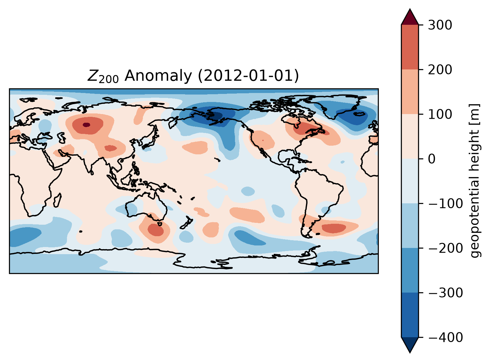
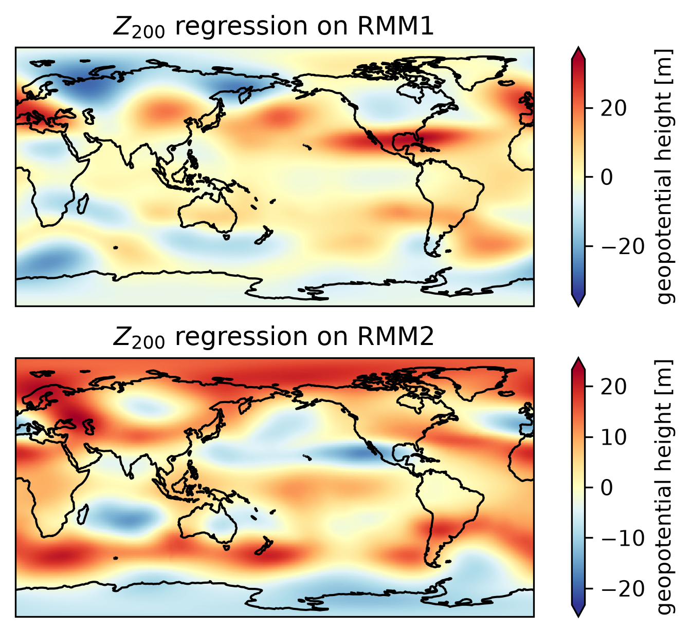
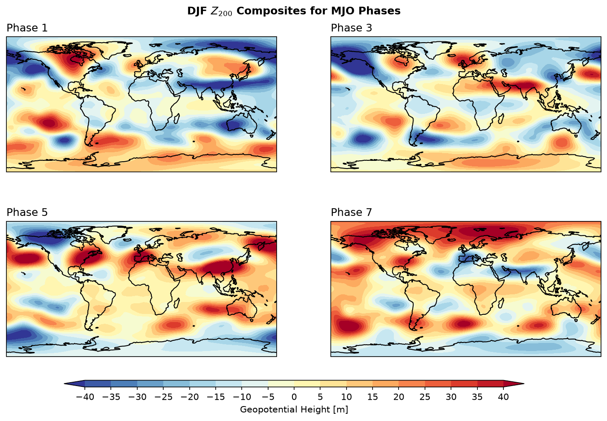
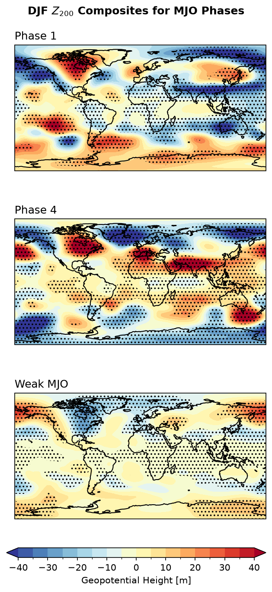
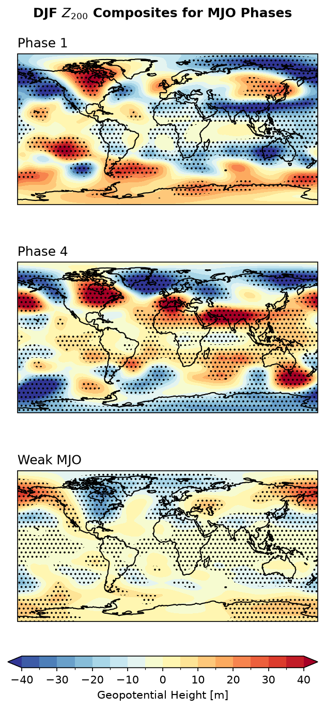

13. dask: Parallel Computations for Large Datasets#
Some people think that large datasets or “big data” are mostly applied to machine learning and artificial intelligence fields. In atmospheric science,
Big data refers to data sets that are so voluminous and complex that traditional data processing application software is inadequate to deal with them.
Due to the long periods and finer grid resolutions of modern reanalysis data or model outputs, it takes huge amount of time and consumes large RAM if reading all the data values. For example, if we read and load the whole ERA5 geopotential files in DJF 1981-2020,
hgt = xr.open_mfdataset( "/tsubaki_data/wtsai/PyAOS/era5_hgt_demo/*.nc",
combine = "nested",
concat_dim = "time",
parallel=True
).load()
hgt
The process takes 7 minutes and 21 seconds, and consumes up to 110GB of RAM on our server. What worse, if executing the above code on a server without enough RAM, it can lead to system overload. You may see the following error message:
MemoryError: Unable to allocate 52.2 GiB for an array with shape (365, 37, 721, 1440) and data type float32
This error message appears because the data size has exceeded the RAM capacity. How should we avoid this situation?
Dask Arrays#
Dask is a flexible library for parallel computing in Python. It can scale up to operate on large datasets and perform computations that cannot fit into memory. Dask achieves this by breaking down large computations into smaller tasks, which are then executed in parallel. This can avoid consuming large amount of RAM.
To understand the usage of dask, with demonstrate first with a 1000 × 4000 array size.
1. Numpy Array:
import numpy as np
shape = (1000, 4000)
ones_np = np.ones(shape)
ones_np
array([[1., 1., 1., ..., 1., 1., 1.],
[1., 1., 1., ..., 1., 1., 1.],
[1., 1., 1., ..., 1., 1., 1.],
...,
[1., 1., 1., ..., 1., 1., 1.],
[1., 1., 1., ..., 1., 1., 1.],
[1., 1., 1., ..., 1., 1., 1.]])
2. Dask Array:
import dask.array as da
ones = da.ones(shape)
ones
|
||||||||||||||||

Dask devides the entire array into sub-arrays named “chunk”. In dask, we can specify the size of a chunk.
chunk_shape = (1000, 1000)
ones = da.ones(shape, chunks=chunk_shape)
ones
|
||||||||||||||||
We can do some arithmetic calculations, such as multiplication and averaging.
ones_mean = (ones * ones[::-1, ::-1]).mean()
ones_mean
|
||||||||||||||||
Following is the calculation procedure:

Dask allows computation of each chunk in each memory core, and finally combines all the computation of each chunk to a final result. Dask integrates commonly-used functions in numpy and xarray, which is beneficial to processing climate data. Then how will dask help with large datasets? In the following sections, we will demonstrate two types of workflow that will leverage the usage of dask to elevate computation efficiency.
Dask Environment Setup#
We add the following codes before we proceed to primary computation jobs.
from dask import delayed, compute
from dask.distributed import Client, LocalCluster
cluster = LocalCluster(n_workers=8, threads_per_worker=1, memory_limit='32GB')
client = Client(cluster)
client
Client
Client-04543d15-808c-11f1-8cb4-e43d1aa7f14b
| Connection method: Cluster object | Cluster type: distributed.LocalCluster |
| Dashboard: http://127.0.0.1:8787/status |
Cluster Info
LocalCluster
56209632
| Dashboard: http://127.0.0.1:8787/status | Workers: 8 |
| Total threads: 8 | Total memory: 238.42 GiB |
| Status: running | Using processes: True |
Scheduler Info
Scheduler
Scheduler-7b7fc657-45aa-4fa9-92bd-78362f383279
| Comm: tcp://127.0.0.1:39661 | Workers: 8 |
| Dashboard: http://127.0.0.1:8787/status | Total threads: 8 |
| Started: Just now | Total memory: 238.42 GiB |
Workers
Worker: 0
| Comm: tcp://127.0.0.1:46511 | Total threads: 1 |
| Dashboard: http://127.0.0.1:37055/status | Memory: 29.80 GiB |
| Nanny: tcp://127.0.0.1:34821 | |
| Local directory: /tmp/dask-scratch-space/worker-xw2abscq | |
Worker: 1
| Comm: tcp://127.0.0.1:41937 | Total threads: 1 |
| Dashboard: http://127.0.0.1:44875/status | Memory: 29.80 GiB |
| Nanny: tcp://127.0.0.1:44795 | |
| Local directory: /tmp/dask-scratch-space/worker-2z5o7fp7 | |
Worker: 2
| Comm: tcp://127.0.0.1:42919 | Total threads: 1 |
| Dashboard: http://127.0.0.1:39033/status | Memory: 29.80 GiB |
| Nanny: tcp://127.0.0.1:34853 | |
| Local directory: /tmp/dask-scratch-space/worker-vdzugnf1 | |
Worker: 3
| Comm: tcp://127.0.0.1:39725 | Total threads: 1 |
| Dashboard: http://127.0.0.1:45247/status | Memory: 29.80 GiB |
| Nanny: tcp://127.0.0.1:44889 | |
| Local directory: /tmp/dask-scratch-space/worker-pisnxqxi | |
Worker: 4
| Comm: tcp://127.0.0.1:41655 | Total threads: 1 |
| Dashboard: http://127.0.0.1:33803/status | Memory: 29.80 GiB |
| Nanny: tcp://127.0.0.1:40305 | |
| Local directory: /tmp/dask-scratch-space/worker-vyb0ktdb | |
Worker: 5
| Comm: tcp://127.0.0.1:46129 | Total threads: 1 |
| Dashboard: http://127.0.0.1:39395/status | Memory: 29.80 GiB |
| Nanny: tcp://127.0.0.1:43043 | |
| Local directory: /tmp/dask-scratch-space/worker-03xu9biw | |
Worker: 6
| Comm: tcp://127.0.0.1:33941 | Total threads: 1 |
| Dashboard: http://127.0.0.1:36723/status | Memory: 29.80 GiB |
| Nanny: tcp://127.0.0.1:35039 | |
| Local directory: /tmp/dask-scratch-space/worker-hiz9atn9 | |
Worker: 7
| Comm: tcp://127.0.0.1:40857 | Total threads: 1 |
| Dashboard: http://127.0.0.1:45119/status | Memory: 29.80 GiB |
| Nanny: tcp://127.0.0.1:44199 | |
| Local directory: /tmp/dask-scratch-space/worker-_7rffccw | |
LocalCluster: Used to start multiple workers on the local machine for parallel computationClient: Connects to the scheduler and handles communication between your Python session and the cluster. Every computation job is submitted to the workers through the client.cluster = LocalCluster(n_workers=32, threads_per_worker=1, memory_limit=0): Creates a local cluster where each worker runs on a single thread. Our server, for example, has 64 CPU (32 physical cores, you can see frombpytopon Linux) — one worker per physical core works best for numerical computations. The memory limit can be set to 0, meaning no restriction. Be cautious: if the dataset is too large or the workflow is poorly designed, this may overload the available RAM. In practice, you can set the memory limit explicitly (e.g.,"4GB","8GB","16GB") to protect your system.client = Client(cluster): Initializes a client object that communicates with the cluster. This ensures all Dask operations (e.g., loading large NetCDF/GRIB files with xarray, or delayed computations) are distributed to the workers via the scheduler.
There is also a link to the Client Dashboard. You can click to monitor your LocalCluster in real time.

Large Climate Dataset Processing#
In Unit 2, we introduced the parallel=True option in xarray.open_mfdataset. This option allows xarray to read the file using dask.
import xarray as xr
hgt = xr.open_mfdataset("/tsubaki_data/wtsai/PyAOS/era5_hgt_demo/*.nc",
combine = "nested",
concat_dim = "time",
parallel=True
).hgt
hgt
<xarray.DataArray 'hgt' (time: 14440, level: 2, latitude: 361, longitude: 720)> Size: 60GB
dask.array<concatenate, shape=(14440, 2, 361, 720), dtype=float64, chunksize=(1, 1, 361, 720), chunktype=numpy.ndarray>
Coordinates:
* time (time) datetime64[ns] 116kB 1981-12-01 ... 2021-02-28T18:00:00
* longitude (longitude) float32 3kB 0.0 0.5 1.0 1.5 ... 358.5 359.0 359.5
* latitude (latitude) float32 1kB 90.0 89.5 89.0 88.5 ... -89.0 -89.5 -90.0
* level (level) int32 8B 200 850
Attributes:
standard_name: geopotential_height
long_name: geopotential height
units: mAt this point, hgt is a Dask-backed DataArray, not a full in-memory NumPy array. At this point, no actual data is read into RAM yet. The DataArray only stores metadata: dimensions, coordinates, data type, chunking info. Hence, the u array is very small (only a few MB regardless of how big your NetCDF files).
Although xarray automatically chunks the dataset when using xr.open_mfdataset(), you can rechunk manually as follow:
hgt = hgt.chunk({'time': 150, 'level':1, 'latitude':361,'longitude':720})
hgt
<xarray.DataArray 'hgt' (time: 14440, level: 2, latitude: 361, longitude: 720)> Size: 60GB
dask.array<rechunk-merge, shape=(14440, 2, 361, 720), dtype=float64, chunksize=(150, 1, 361, 720), chunktype=numpy.ndarray>
Coordinates:
* time (time) datetime64[ns] 116kB 1981-12-01 ... 2021-02-28T18:00:00
* longitude (longitude) float32 3kB 0.0 0.5 1.0 1.5 ... 358.5 359.0 359.5
* latitude (latitude) float32 1kB 90.0 89.5 89.0 88.5 ... -89.0 -89.5 -90.0
* level (level) int32 8B 200 850
Attributes:
standard_name: geopotential_height
long_name: geopotential height
units: mManual rechunking is particularly useful when the dataset is very large and the automatic chunking produces too many small chunks, which can lead to high scheduling overhead in Dask.
Practical guidelines for chunk sizing:
Aim for chunk sizes roughly 50–200 MB each. This is large enough to reduce overhead but small enough to fit in RAM comfortably.
Avoid having too many chunks per dimension (e.g., hundreds or thousands), because Dask has to manage each chunk as a separate task, which can slow down the computation.
Read more details on how to choose good chunk sizes here.
.compute()#
compute() will triger the computation and exeute task graphs. The final results will be loaded into RAM. Therefore, it is a good practice to slice, subset, or reduce your datasets before calling .compute(), especially when working with large NetCDF or GRIB files, to avoid memory overload.
hgt_DayClm = hgt.groupby("time.dayofyear").mean("time")
hgt_DayClm
<xarray.DataArray 'hgt' (dayofyear: 92, level: 2, latitude: 361, longitude: 720)> Size: 383MB
dask.array<transpose, shape=(92, 2, 361, 720), dtype=float64, chunksize=(92, 1, 361, 720), chunktype=numpy.ndarray>
Coordinates:
* longitude (longitude) float32 3kB 0.0 0.5 1.0 1.5 ... 358.5 359.0 359.5
* latitude (latitude) float32 1kB 90.0 89.5 89.0 88.5 ... -89.0 -89.5 -90.0
* level (level) int32 8B 200 850
* dayofyear (dayofyear) int64 736B 1 2 3 4 5 6 7 ... 361 362 363 364 365 366
Attributes:
standard_name: geopotential_height
long_name: geopotential height
units: mThe whole array is reduced to only 364.88 MB. Now we can trigger the computation and execute task graphs and load into a DataArray.
hgt_DayClm_computed = hgt_DayClm.compute()
hgt_DayClm_computed
/data/wtsai/micromamba/p3t/lib/python3.10/site-packages/distributed/client.py:3370: UserWarning: Sending large graph of size 15.24 MiB.
This may cause some slowdown.
Consider loading the data with Dask directly
or using futures or delayed objects to embed the data into the graph without repetition.
See also https://docs.dask.org/en/stable/best-practices.html#load-data-with-dask for more information.
warnings.warn(
2026-07-15 15:31:02,216 - distributed.worker.state_machine - WARNING - Async instruction for <Task cancelled name="execute(('rechunk-merge-429d52b56644f40e357626ae93996106', 10, 1, 0, 0))" coro=<Worker.execute() done, defined at /data/wtsai/micromamba/p3t/lib/python3.10/site-packages/distributed/worker_state_machine.py:3607>> ended with CancelledError
2026-07-15 15:31:02,216 - distributed.worker.state_machine - WARNING - Async instruction for <Task cancelled name="execute(('open_dataset-hgt-concatenate-cc67ba4027ded70fa5bbcbf692a9eb2c', 877, 1, 0, 0))" coro=<Worker.execute() done, defined at /data/wtsai/micromamba/p3t/lib/python3.10/site-packages/distributed/worker_state_machine.py:3607>> ended with CancelledError
2026-07-15 15:31:02,216 - distributed.worker.state_machine - WARNING - Async instruction for <Task cancelled name="execute(('open_dataset-hgt-concatenate-cc67ba4027ded70fa5bbcbf692a9eb2c', 868, 1, 0, 0))" coro=<Worker.execute() done, defined at /data/wtsai/micromamba/p3t/lib/python3.10/site-packages/distributed/worker_state_machine.py:3607>> ended with CancelledError
2026-07-15 15:31:02,216 - distributed.worker.state_machine - WARNING - Async instruction for <Task cancelled name="execute(('open_dataset-hgt-concatenate-cc67ba4027ded70fa5bbcbf692a9eb2c', 870, 1, 0, 0))" coro=<Worker.execute() done, defined at /data/wtsai/micromamba/p3t/lib/python3.10/site-packages/distributed/worker_state_machine.py:3607>> ended with CancelledError
2026-07-15 15:31:02,216 - distributed.worker.state_machine - WARNING - Async instruction for <Task cancelled name="execute(('open_dataset-hgt-concatenate-cc67ba4027ded70fa5bbcbf692a9eb2c', 872, 1, 0, 0))" coro=<Worker.execute() done, defined at /data/wtsai/micromamba/p3t/lib/python3.10/site-packages/distributed/worker_state_machine.py:3607>> ended with CancelledError
2026-07-15 15:31:02,216 - distributed.worker.state_machine - WARNING - Async instruction for <Task cancelled name="execute(('open_dataset-hgt-concatenate-cc67ba4027ded70fa5bbcbf692a9eb2c', 871, 1, 0, 0))" coro=<Worker.execute() done, defined at /data/wtsai/micromamba/p3t/lib/python3.10/site-packages/distributed/worker_state_machine.py:3607>> ended with CancelledError
2026-07-15 15:31:02,216 - distributed.worker.state_machine - WARNING - Async instruction for <Task cancelled name="execute(('groupby_nanmean-simple-reduce-partial-6dd5bc2ca6adf56bcac9e1af3ce39830', 1, 0, 0, 3))" coro=<Worker.execute() done, defined at /data/wtsai/micromamba/p3t/lib/python3.10/site-packages/distributed/worker_state_machine.py:3607>> ended with CancelledError
2026-07-15 15:31:02,217 - distributed.worker.state_machine - WARNING - Async instruction for <Task cancelled name="execute(('open_dataset-hgt-concatenate-cc67ba4027ded70fa5bbcbf692a9eb2c', 875, 1, 0, 0))" coro=<Worker.execute() done, defined at /data/wtsai/micromamba/p3t/lib/python3.10/site-packages/distributed/worker_state_machine.py:3607>> ended with CancelledError
2026-07-15 15:31:02,589 - distributed.worker - ERROR - Failed to communicate with scheduler during heartbeat.
Traceback (most recent call last):
File "/data/wtsai/micromamba/p3t/lib/python3.10/site-packages/distributed/comm/tcp.py", line 226, in read
frames_nosplit_nbytes_bin = await stream.read_bytes(fmt_size)
tornado.iostream.StreamClosedError: Stream is closed
The above exception was the direct cause of the following exception:
Traceback (most recent call last):
File "/data/wtsai/micromamba/p3t/lib/python3.10/site-packages/distributed/worker.py", line 1269, in heartbeat
response = await retry_operation(
File "/data/wtsai/micromamba/p3t/lib/python3.10/site-packages/distributed/utils_comm.py", line 416, in retry_operation
return await retry(
File "/data/wtsai/micromamba/p3t/lib/python3.10/site-packages/distributed/utils_comm.py", line 395, in retry
return await coro()
File "/data/wtsai/micromamba/p3t/lib/python3.10/site-packages/distributed/core.py", line 1
259, in send_recv_from_rpc
return await send_recv(comm=comm, op=key, **kwargs)
File "/data/wtsai/micromamba/p3t/lib/python3.10/site-packages/distributed/core.py", line 1018, in send_recv
response = await comm.read(deserializers=deserializers)
File "/data/wtsai/micromamba/p3t/lib/python3.10/site-packages/distributed/comm/tcp.py", line 237, in read
convert_stream_closed_error(self, e)
File "/data/wtsai/micromamba/p3t/lib/python3.10/site-packages/distributed/comm/tcp.py", line 137, in convert_stream_closed_error
raise CommClosedError(f"in {obj}: {exc}") from exc
distributed.comm.core.CommClosedError: in <TCP (closed) ConnectionPool.heartbeat_worker local=tcp://127.0.0.1:40082 remote=tcp://127.0.0.1:39661>: Stream is closed
The whole computation time takes less than one and half minute on our server, much less than the computation time required by simply reading and loading the whole data values.
.persist()#
Every .compute() triggers the entire task graph from beginning: reading the original NetCDF/GRIB files from disk, chunking the data, performing intermediate computations, and producing the final results. If you plan to use a intermediate product multiple times, you can persist it before the following calculations. For example, we now calculate the \(Z_{200}\) anomaly:
hgtDay = hgt.coarsen(time=4,coord_func='min').mean() # Convert to daily mean
za200 = ((hgtDay.groupby("time.dayofyear") - hgt_DayClm_computed).sel(level=200)
.chunk({'time': 90, 'latitude':180,'longitude':240}))
za200 = za200.persist()
za200
/data/wtsai/micromamba/p312/lib/python3.12/site-packages/distributed/client.py:3415: UserWarning: Sending large graph of size 369.03 MiB.
This may cause some slowdown.
Consider loading the data with Dask directly
or using futures or delayed objects to embed the data into the graph without repetition.
See also https://docs.dask.org/en/stable/best-practices.html#load-data-with-dask for more information.
warnings.warn(
<xarray.DataArray 'hgt' (time: 3610, latitude: 361, longitude: 720)> Size: 8GB
dask.array<rechunk-p2p, shape=(3610, 361, 720), dtype=float64, chunksize=(90, 180, 240), chunktype=numpy.ndarray>
Coordinates:
* time (time) datetime64[ns] 29kB 1981-12-01 1981-12-02 ... 2021-02-28
dayofyear (time) int64 29kB dask.array<chunksize=(90,), meta=np.ndarray>
* latitude (latitude) float32 1kB 90.0 89.5 89.0 88.5 ... -89.0 -89.5 -90.0
* longitude (longitude) float32 3kB 0.0 0.5 1.0 1.5 ... 358.5 359.0 359.5
level int32 4B 200
Attributes:
standard_name: geopotential_height
long_name: geopotential height
units: mThe .persist() triggers computation of parts of the task graph and stores the resulting chunks in the workers’ memory (RAM), rather than returning them to the main Python session. We see that za200 remains a dask array, but the dask graph has been reduced to 1. Subsequent computations that depend on the persisted data will directly use the in-memory chunks, avoiding repeated reading and intermediate computations.
Caution
Only persist the intermediate data whose size fits within the workers’ total memory.
Finally, we choose a day to plot the anomaly map. Note that the plot function will automatically triger computation without .compute().
import matplotlib as mpl
from matplotlib import pyplot as plt
from cartopy import crs as ccrs
mpl.rcParams['figure.dpi'] = 300
fig, ax = plt.subplots(1,1,
subplot_kw=dict(projection=ccrs.PlateCarree(central_longitude=180)))
za200.sel(time='2012-01-01').plot.contourf(x='longitude', y='latitude',
ax=ax, transform=ccrs.PlateCarree(), cmap='RdBu_r', extend='both')
ax.coastlines()
ax.set_title(r'$Z_{200}$ Anomaly (2012-01-01)')
Text(0.5, 1.0, '$Z_{200}$ Anomaly (2012-01-01)')

Example 1: Plot the \(Z_{200}\) regression maps on to RMM1 and RMM2.
Step 1: Read MJO data from the IRI data library.
import pandas as pd
# Read MJO data
mjo_ds = xr.open_dataset('http://iridl.ldeo.columbia.edu/SOURCES/.BoM/.MJO/.RMM/dods',
engine='netcdf4',
decode_times=False).rename({'T':'time'})
T = mjo_ds.time.values
mjo_ds['time'] = pd.date_range("1974-06-01", periods=len(T)) # The begining date of the RMM index is 1974-06-01
mjo_ds = mjo_ds.sel(time=za200.time).chunk({'time': 360}) # Align the time dimension of mjo_ds with za200
mjo_ds
HDF5-DIAG: Error detected in HDF5 (2.1.0) thread 2:
#000: /home/conda/feedstock_root/build_artifacts/hdf5_1780922703635/work/src/H5F.c line 490 in H5Fis_accessible(): unable to determine if file is accessible as HDF5
major: File accessibility
minor: Not an HDF5 file
#001: /home/conda/feedstock_root/build_artifacts/hdf5_1780922703635/work/src/H5VLcallback.c line 4109 in H5VL_file_specific(): file specific failed
major: Virtual Object Layer
minor: Can't operate on object
#002: /home/conda/feedstock_root/build_artifacts/hdf5_1780922703635/work/src/H5VLcallback.c line 4045 in H5VL__file_specific(): file specific failed
major: Virtual Object Layer
minor: Can't operate on object
#003: /home/conda/feedstock_root/build_artifacts/hdf5_1780922703635/work/src/H5VLnative_file.c line 344 in H5VL__native_file_specific(): error in HDF5 file check
major: File accessibility
minor: Can't get value
#004: /home/conda/feedstock_root/build_artifacts/hdf5_1780922703635/work/src/H5Fint.c line 1083 in H5F__is_hdf5(): unable to open file
major: File accessibility
minor: Unable to initialize object
#005: /home/conda/feedstock_root/build_artifacts/hdf5_1780922703635/work/src/H5FD.c line 966 in H5FD_open(): can't open file
major: Virtual File Layer
minor: Unable to open file
#006: /home/conda/feedstock_root/build_artifacts/hdf5_1780922703635/work/src/H5FDsec2.c line 285 in H5FD__sec2_open(): unable to open file: name = 'http://iridl.ldeo.columbia.edu/SOURCES/.BoM/.MJO/.RMM/dods', errno = 2, error message = 'No such file or directory', flags = 0, o_flags = 0
major: File accessibility
minor: Unable to open file
HDF5-DIAG: Error detected in HDF5 (2.1.0) thread 2:
#000: /home/conda/feedstock_root/build_artifacts/hdf5_1780922703635/work/src/H5F.c line 490 in H5Fis_accessible(): unable to determine if file is accessible as HDF5
major: File accessibility
minor: Not an HDF5 file
#001: /home/conda/feedstock_root/build_artifacts/hdf5_1780922703635/work/src/H5VLcallback.c line 4109 in H5VL_file_specific(): file specific failed
major: Virtual Object Layer
minor: Can't operate on object
#002: /home/conda/feedstock_root/build_artifacts/hdf5_1780922703635/work/src/H5VLcallback.c line 4045 in H5VL__file_specific(): file specific failed
major: Virtual Object Layer
minor: Can't operate on object
#003: /home/conda/feedstock_root/build_artifacts/hdf5_1780922703635/work/src/H5VLnative_file.c line 344 in H5VL__native_file_specific(): error in HDF5 file check
major: File accessibility
minor: Can't get value
#004: /home/conda/feedstock_root/build_artifacts/hdf5_1780922703635/work/src/H5Fint.c line 1083 in H5F__is_hdf5(): unable to open file
major: File accessibility
minor: Unable to initialize object
#005: /home/conda/feedstock_root/build_artifacts/hdf5_1780922703635/work/src/H5FD.c line 966 in H5FD_open(): can't open file
major: Virtual File Layer
minor: Unable to open file
#006: /home/conda/feedstock_root/build_artifacts/hdf5_1780922703635/work/src/H5FDsec2.c line 285 in H5FD__sec2_open(): unable to open file: name = 'tmp_524289', errno = 2, error message = 'No such file or directory', flags = 0, o_flags = 0
major: File accessibility
minor: Unable to open file
syntax error, unexpected WORD_STRING, expecting ';' or ','
context: Attributes { T { String standard_name "time"; Float32 pointwidth 1.0; String calendar "standard"; Int32 expires 1783987200; Int32 gridtype 0; String units "julian_day"; } amplitude { Int32 expires 1783987200; String units "unitless"; Float32 missing_value 9.99999962E35; } phase { Int32 expires 1783987200; String units "unitless"; Float32 missing_value 999.0; } RMM1 { Int32 expires 1783987200; String units "unitless"; Float32 missing_value 9.99999962E35; } RMM2 { Int32 expires 1783987200; String units "unitless"; Float32 missing_value 9.99999962E35; }NC_GLOBAL { URL data source "http://www.bom.gov.au/climate/mjo/graphics/rmm.74toRealtime.txt"^; String Conventions "IRIDL"; String references "Wheeler_Hendon2004"; Int32 expires 1783987200; String description "Real-time Multivariate MJO Index (with components of interannual variability removed)"; URL Wheeler and Hendon (2004) Monthly Weather Review article "http://journals.ametsoc.org/doi/abs/10.1175/1520-0493(2004)132%3C1917:AARMMI%3E2.0.CO;2"; URL summary from BoM "http://www.bom.gov.au/climate/mjo/";}}
Illegal attribute
context: Attributes { T { String standard_name "time"; Float32 pointwidth 1.0; String calendar "standard"; Int32 expires 1783987200; Int32 gridtype 0; String units "julian_day"; } amplitude { Int32 expires 1783987200; String units "unitless"; Float32 missing_value 9.99999962E35; } phase { Int32 expires 1783987200; String units "unitless"; Float32 missing_value 999.0; } RMM1 { Int32 expires 1783987200; String units "unitless"; Float32 missing_value 9.99999962E35; } RMM2 { Int32 expires 1783987200; String units "unitless"; Float32 missing_value 9.99999962E35; }NC_GLOBAL { URL data source "http://www.bom.gov.au/climate/mjo/graphics/rmm.74toRealtime.txt"^; String Conventions "IRIDL"; String references "Wheeler_Hendon2004"; Int32 expires 1783987200; String description "Real-time Multivariate MJO Index (with components of interannual variability removed)"; URL Wheeler and Hendon (2004) Monthly Weather Review article "http://journals.ametsoc.org/doi/abs/10.1175/1520-0493(2004)132%3C1917:AARMMI%3E2.0.CO;2"; URL summary from BoM "http://www.bom.gov.au/climate/mjo/";}}
<xarray.Dataset> Size: 116kB
Dimensions: (time: 3610)
Coordinates:
* time (time) datetime64[us] 29kB 1981-12-01 1981-12-02 ... 2021-02-28
dayofyear (time) int64 29kB dask.array<chunksize=(360,), meta=np.ndarray>
level int32 4B 200
Data variables:
amplitude (time) float32 14kB dask.array<chunksize=(360,), meta=np.ndarray>
phase (time) float32 14kB dask.array<chunksize=(360,), meta=np.ndarray>
RMM1 (time) float32 14kB dask.array<chunksize=(360,), meta=np.ndarray>
RMM2 (time) float32 14kB dask.array<chunksize=(360,), meta=np.ndarray>Step 2: Calculate the regression coefficient \(\mathbf{A}\) using the following equation:
where \(X\) is predictand data (in this case, RMM index), and \(Y\) is predictor matrix (in this case, za).
z_rmm1_slope = xr.cov(za200, mjo_ds.RMM1, dim='time') / xr.cov(mjo_ds.RMM1, mjo_ds.RMM1, dim='time')
z_rmm2_slope = xr.cov(za200, mjo_ds.RMM2, dim='time') / xr.cov(mjo_ds.RMM2, mjo_ds.RMM2, dim='time')
fig, ax = plt.subplots(2,1,
subplot_kw=dict(projection=ccrs.PlateCarree(central_longitude=180)))
z_rmm1_slope.plot(x='longitude', y='latitude', ax=ax[0], cmap='RdYlBu_r', extend='both')
z_rmm2_slope.plot(x='longitude', y='latitude', ax=ax[1], cmap='RdYlBu_r', extend='both')
for i in range(2):
ax[i].coastlines()
ax[i].set_title(r'$Z_{200}$ regression on '+ f'RMM{i+1}')
syntax error, unexpected WORD_STRING, expecting ';' or ','
context: Attributes { T { String standard_name "time"; Float32 pointwidth 1.0; String calendar "standard"; Int32 expires 1783987200; Int32 gridtype 0; String units "julian_day"; } amplitude { Int32 expires 1783987200; String units "unitless"; Float32 missing_value 9.99999962E35; } phase { Int32 expires 1783987200; String units "unitless"; Float32 missing_value 999.0; } RMM1 { Int32 expires 1783987200; String units "unitless"; Float32 missing_value 9.99999962E35; } RMM2 { Int32 expires 1783987200; String units "unitless"; Float32 missing_value 9.99999962E35; }NC_GLOBAL { URL data source "http://www.bom.gov.au/climate/mjo/graphics/rmm.74toRealtime.txt"^; String Conventions "IRIDL"; String references "Wheeler_Hendon2004"; Int32 expires 1783987200; String description "Real-time Multivariate MJO Index (with components of interannual variability removed)"; URL Wheeler and Hendon (2004) Monthly Weather Review article "http://journals.ametsoc.org/doi/abs/10.1175/1520-0493(2004)132%3C1917:AARMMI%3E2.0.CO;2"; URL summary from BoM "http://www.bom.gov.au/climate/mjo/";}}
Illegal attribute
context: Attributes { T { String standard_name "time"; Float32 pointwidth 1.0; String calendar "standard"; Int32 expires 1783987200; Int32 gridtype 0; String units "julian_day"; } amplitude { Int32 expires 1783987200; String units "unitless"; Float32 missing_value 9.99999962E35; } phase { Int32 expires 1783987200; String units "unitless"; Float32 missing_value 999.0; } RMM1 { Int32 expires 1783987200; String units "unitless"; Float32 missing_value 9.99999962E35; } RMM2 { Int32 expires 1783987200; String units "unitless"; Float32 missing_value 9.99999962E35; }NC_GLOBAL { URL data source "http://www.bom.gov.au/climate/mjo/graphics/rmm.74toRealtime.txt"^; String Conventions "IRIDL"; String references "Wheeler_Hendon2004"; Int32 expires 1783987200; String description "Real-time Multivariate MJO Index (with components of interannual variability removed)"; URL Wheeler and Hendon (2004) Monthly Weather Review article "http://journals.ametsoc.org/doi/abs/10.1175/1520-0493(2004)132%3C1917:AARMMI%3E2.0.CO;2"; URL summary from BoM "http://www.bom.gov.au/climate/mjo/";}}
syntax error, unexpected WORD_STRING, expecting ';' or ','
context: Attributes { T { String standard_name "time"; Float32 pointwidth 1.0; String calendar "standard"; Int32 expires 1783987200; Int32 gridtype 0; String units "julian_day"; } amplitude { Int32 expires 1783987200; String units "unitless"; Float32 missing_value 9.99999962E35; } phase { Int32 expires 1783987200; String units "unitless"; Float32 missing_value 999.0; } RMM1 { Int32 expires 1783987200; String units "unitless"; Float32 missing_value 9.99999962E35; } RMM2 { Int32 expires 1783987200; String units "unitless"; Float32 missing_value 9.99999962E35; }NC_GLOBAL { URL data source "http://www.bom.gov.au/climate/mjo/graphics/rmm.74toRealtime.txt"^; String Conventions "IRIDL"; String references "Wheeler_Hendon2004"; Int32 expires 1783987200; String description "Real-time Multivariate MJO Index (with components of interannual variability removed)"; URL Wheeler and Hendon (2004) Monthly Weather Review article "http://journals.ametsoc.org/doi/abs/10.1175/1520-0493(2004)132%3C1917:AARMMI%3E2.0.CO;2"; URL summary from BoM "http://www.bom.gov.au/climate/mjo/";}}
Illegal attribute
context: Attributes { T { String standard_name "time"; Float32 pointwidth 1.0; String calendar "standard"; Int32 expires 1783987200; Int32 gridtype 0; String units "julian_day"; } amplitude { Int32 expires 1783987200; String units "unitless"; Float32 missing_value 9.99999962E35; } phase { Int32 expires 1783987200; String units "unitless"; Float32 missing_value 999.0; } RMM1 { Int32 expires 1783987200; String units "unitless"; Float32 missing_value 9.99999962E35; } RMM2 { Int32 expires 1783987200; String units "unitless"; Float32 missing_value 9.99999962E35; }NC_GLOBAL { URL data source "http://www.bom.gov.au/climate/mjo/graphics/rmm.74toRealtime.txt"^; String Conventions "IRIDL"; String references "Wheeler_Hendon2004"; Int32 expires 1783987200; String description "Real-time Multivariate MJO Index (with components of interannual variability removed)"; URL Wheeler and Hendon (2004) Monthly Weather Review article "http://journals.ametsoc.org/doi/abs/10.1175/1520-0493(2004)132%3C1917:AARMMI%3E2.0.CO;2"; URL summary from BoM "http://www.bom.gov.au/climate/mjo/";}}
syntax error, unexpected WORD_STRING, expecting ';' or ','syntax error, unexpected WORD_STRING, expecting ';' or ','
context: Attributes { T { String standard_name "time"; Float32 pointwidth 1.0; String calendar "standard"; Int32 expires 1783987200; Int32 gridtype 0; String units "julian_day"; } amplitude { Int32 expires 1783987200; String units "unitless"; Float32 missing_value 9.99999962E35; } phase { Int32 expires 1783987200; String units "unitless"; Float32 missing_value 999.0; } RMM1 { Int32 expires 1783987200; String units "unitless"; Float32 missing_value 9.99999962E35; } RMM2 { Int32 expires 1783987200; String units "unitless"; Float32 missing_value 9.99999962E35; }NC_GLOBAL { URL data source "http://www.bom.gov.au/climate/mjo/graphics/rmm.74toRealtime.txt"context: Attributes { T { String standard_name "time"; Float32 pointwidth 1.0; String calendar "standard"; Int32 expires 1783987200; Int32 gridtype 0; String units "julian_day"; } amplitude { Int32 expires 1783987200; String units "unitless"; Float32 missing_value 9.99999962E35; } phase { Int32 expires 1783987200; String units "unitless"; Float32 missing_value 999.0; } RMM1 { Int32 expires 1783987200; String units "unitless"; Float32 missing_value 9.99999962E35; } RMM2 { Int32 expires 1783987200; String units "unitless"; Float32 missing_value 9.99999962E35; }NC_GLOBAL { URL data source "http://www.bom.gov.au/climate/mjo/graphics/rmm.74toRealtime.txt"^; String Conventions "IRIDL"; String references "Wheeler_Hendon2004"; Int32 expires 1783987200; String description "Real-time Multivariate MJO Index (with components of interannual variability removed)"; URL Wheeler and Hendon (2004) Monthly Weather Review article "http://journals.ametsoc.org/doi/abs/10.1175/1520-0493(2004)132%3C1917:AARMMI%3E2.0.CO;2"; URL summary from BoM "http://www.bom.gov.au/climate/mjo/";}}
^; String Conventions "IRIDL"; String references "Wheeler_Hendon2004"; Int32 expires 1783987200; String description "Real-time Multivariate MJO Index (with components of interannual variability removed)"; URL Wheeler and Hendon (2004) Monthly Weather Review article "http://journals.ametsoc.org/doi/abs/10.1175/1520-0493(2004)132%3C1917:AARMMI%3E2.0.CO;2"; URL summary from BoM "http://www.bom.gov.au/climate/mjo/";}}
Illegal attributeIllegal attribute
context: Attributes { T { String standard_name "time"; Float32 pointwidth 1.0; String calendar "standard"; Int32 expires 1783987200; Int32 gridtype 0; String units "julian_day"; } amplitude { Int32 expires 1783987200; String units "unitless"; Float32 missing_value 9.99999962E35; } phase { Int32 expires 1783987200; String units "unitless"; Float32 missing_value 999.0; } RMM1 { Int32 expires 1783987200; String units "unitless"; Float32 missing_value 9.99999962E35; } RMM2 { Int32 expires 1783987200; String units "unitless"; Float32 missing_value 9.99999962E35; }NC_GLOBAL { URL data source "http://www.bom.gov.au/climate/mjo/graphics/rmm.74toRealtime.txt"context: Attributes { T { String standard_name "time"; Float32 pointwidth 1.0; String calendar "standard"; Int32 expires 1783987200; Int32 gridtype 0; String units "julian_day"; } amplitude { Int32 expires 1783987200; String units "unitless"; Float32 missing_value 9.99999962E35; } phase { Int32 expires 1783987200; String units "unitless"; Float32 missing_value 999.0; } RMM1 { Int32 expires 1783987200; String units "unitless"; Float32 missing_value 9.99999962E35; } RMM2 { Int32 expires 1783987200; String units "unitless"; Float32 missing_value 9.99999962E35; }NC_GLOBAL { URL data source "http://www.bom.gov.au/climate/mjo/graphics/rmm.74toRealtime.txt"^; String Conventions "IRIDL"; String references "Wheeler_Hendon2004"; Int32 expires 1783987200; String description "Real-time Multivariate MJO Index (with components of interannual variability removed)"; URL Wheeler and Hendon (2004) Monthly Weather Review article "http://journals.ametsoc.org/doi/abs/10.1175/1520-0493(2004)132%3C1917:AARMMI%3E2.0.CO;2"; URL summary from BoM "http://www.bom.gov.au/climate/mjo/";}}
^; String Conventions "IRIDL"; String references "Wheeler_Hendon2004"; Int32 expires 1783987200; String description "Real-time Multivariate MJO Index (with components of interannual variability removed)"; URL Wheeler and Hendon (2004) Monthly Weather Review article "http://journals.ametsoc.org/doi/abs/10.1175/1520-0493(2004)132%3C1917:AARMMI%3E2.0.CO;2"; URL summary from BoM "http://www.bom.gov.au/climate/mjo/";}}
syntax error, unexpected WORD_STRING, expecting ';' or ','
context: Attributes { T { String standard_name "time"; Float32 pointwidth 1.0; String calendar "standard"; Int32 expires 1783987200; Int32 gridtype 0; String units "julian_day"; } amplitude { Int32 expires 1783987200; String units "unitless"; Float32 missing_value 9.99999962E35; } phase { Int32 expires 1783987200; String units "unitless"; Float32 missing_value 999.0; } RMM1 { Int32 expires 1783987200; String units "unitless"; Float32 missing_value 9.99999962E35; } RMM2 { Int32 expires 1783987200; String units "unitless"; Float32 missing_value 9.99999962E35; }NC_GLOBAL { URL data source "http://www.bom.gov.au/climate/mjo/graphics/rmm.74toRealtime.txt"^; String Conventions "IRIDL"; String references "Wheeler_Hendon2004"; Int32 expires 1783987200; String description "Real-time Multivariate MJO Index (with components of interannual variability removed)"; URL Wheeler and Hendon (2004) Monthly Weather Review article "http://journals.ametsoc.org/doi/abs/10.1175/1520-0493(2004)132%3C1917:AARMMI%3E2.0.CO;2"; URL summary from BoM "http://www.bom.gov.au/climate/mjo/";}}
Illegal attribute
context: Attributes { T { String standard_name "time"; Float32 pointwidth 1.0; String calendar "standard"; Int32 expires 1783987200; Int32 gridtype 0; String units "julian_day"; } amplitude { Int32 expires 1783987200; String units "unitless"; Float32 missing_value 9.99999962E35; } phase { Int32 expires 1783987200; String units "unitless"; Float32 missing_value 999.0; } RMM1 { Int32 expires 1783987200; String units "unitless"; Float32 missing_value 9.99999962E35; } RMM2 { Int32 expires 1783987200; String units "unitless"; Float32 missing_value 9.99999962E35; }NC_GLOBAL { URL data source "http://www.bom.gov.au/climate/mjo/graphics/rmm.74toRealtime.txt"^; String Conventions "IRIDL"; String references "Wheeler_Hendon2004"; Int32 expires 1783987200; String description "Real-time Multivariate MJO Index (with components of interannual variability removed)"; URL Wheeler and Hendon (2004) Monthly Weather Review article "http://journals.ametsoc.org/doi/abs/10.1175/1520-0493(2004)132%3C1917:AARMMI%3E2.0.CO;2"; URL summary from BoM "http://www.bom.gov.au/climate/mjo/";}}
syntax error, unexpected WORD_STRING, expecting ';' or ','
context: Attributes { T { String standard_name "time"; Float32 pointwidth 1.0; String calendar "standard"; Int32 expires 1783987200; Int32 gridtype 0; String units "julian_day"; } amplitude { Int32 expires 1783987200; String units "unitless"; Float32 missing_value 9.99999962E35; } phase { Int32 expires 1783987200; String units "unitless"; Float32 missing_value 999.0; } RMM1 { Int32 expires 1783987200; String units "unitless"; Float32 missing_value 9.99999962E35; } RMM2 { Int32 expires 1783987200; String units "unitless"; Float32 missing_value 9.99999962E35; }NC_GLOBAL { URL data source "http://www.bom.gov.au/climate/mjo/graphics/rmm.74toRealtime.txt"^; String Conventions "IRIDL"; String references "Wheeler_Hendon2004"; Int32 expires 1783987200; String description "Real-time Multivariate MJO Index (with components of interannual variability removed)"; URL Wheeler and Hendon (2004) Monthly Weather Review article "http://journals.ametsoc.org/doi/abs/10.1175/1520-0493(2004)132%3C1917:AARMMI%3E2.0.CO;2"; URL summary from BoM "http://www.bom.gov.au/climate/mjo/";}}
Illegal attribute
context: Attributes { T { String standard_name "time"; Float32 pointwidth 1.0; String calendar "standard"; Int32 expires 1783987200; Int32 gridtype 0; String units "julian_day"; } amplitude { Int32 expires 1783987200; String units "unitless"; Float32 missing_value 9.99999962E35; } phase { Int32 expires 1783987200; String units "unitless"; Float32 missing_value 999.0; } RMM1 { Int32 expires 1783987200; String units "unitless"; Float32 missing_value 9.99999962E35; } RMM2 { Int32 expires 1783987200; String units "unitless"; Float32 missing_value 9.99999962E35; }NC_GLOBAL { URL data source "http://www.bom.gov.au/climate/mjo/graphics/rmm.74toRealtime.txt"^; String Conventions "IRIDL"; String references "Wheeler_Hendon2004"; Int32 expires 1783987200; String description "Real-time Multivariate MJO Index (with components of interannual variability removed)"; URL Wheeler and Hendon (2004) Monthly Weather Review article "http://journals.ametsoc.org/doi/abs/10.1175/1520-0493(2004)132%3C1917:AARMMI%3E2.0.CO;2"; URL summary from BoM "http://www.bom.gov.au/climate/mjo/";}}
syntax error, unexpected WORD_STRING, expecting ';' or ','
context: Attributes { T { String standard_name "time"; Float32 pointwidth 1.0; String calendar "standard"; Int32 expires 1783987200; Int32 gridtype 0; String units "julian_day"; } amplitude { Int32 expires 1783987200; String units "unitless"; Float32 missing_value 9.99999962E35; } phase { Int32 expires 1783987200; String units "unitless"; Float32 missing_value 999.0; } RMM1 { Int32 expires 1783987200; String units "unitless"; Float32 missing_value 9.99999962E35; } RMM2 { Int32 expires 1783987200; String units "unitless"; Float32 missing_value 9.99999962E35; }NC_GLOBAL { URL data source "http://www.bom.gov.au/climate/mjo/graphics/rmm.74toRealtime.txt"^; String Conventions "IRIDL"; String references "Wheeler_Hendon2004"; Int32 expires 1783987200; String description "Real-time Multivariate MJO Index (with components of interannual variability removed)"; URL Wheeler and Hendon (2004) Monthly Weather Review article "http://journals.ametsoc.org/doi/abs/10.1175/1520-0493(2004)132%3C1917:AARMMI%3E2.0.CO;2"; URL summary from BoM "http://www.bom.gov.au/climate/mjo/";}}
Illegal attribute
context: Attributes { T { String standard_name "time"; Float32 pointwidth 1.0; String calendar "standard"; Int32 expires 1783987200; Int32 gridtype 0; String units "julian_day"; } amplitude { Int32 expires 1783987200; String units "unitless"; Float32 missing_value 9.99999962E35; } phase { Int32 expires 1783987200; String units "unitless"; Float32 missing_value 999.0; } RMM1 { Int32 expires 1783987200; String units "unitless"; Float32 missing_value 9.99999962E35; } RMM2 { Int32 expires 1783987200; String units "unitless"; Float32 missing_value 9.99999962E35; }NC_GLOBAL { URL data source "http://www.bom.gov.au/climate/mjo/graphics/rmm.74toRealtime.txt"^; String Conventions "IRIDL"; String references "Wheeler_Hendon2004"; Int32 expires 1783987200; String description "Real-time Multivariate MJO Index (with components of interannual variability removed)"; URL Wheeler and Hendon (2004) Monthly Weather Review article "http://journals.ametsoc.org/doi/abs/10.1175/1520-0493(2004)132%3C1917:AARMMI%3E2.0.CO;2"; URL summary from BoM "http://www.bom.gov.au/climate/mjo/";}}
syntax error, unexpected WORD_STRING, expecting ';' or ','
context: Attributes { T { String standard_name "time"; Float32 pointwidth 1.0; String calendar "standard"; Int32 expires 1783987200; Int32 gridtype 0; String units "julian_day"; } amplitude { Int32 expires 1783987200; String units "unitless"; Float32 missing_value 9.99999962E35; } phase { Int32 expires 1783987200; String units "unitless"; Float32 missing_value 999.0; } RMM1 { Int32 expires 1783987200; String units "unitless"; Float32 missing_value 9.99999962E35; } RMM2 { Int32 expires 1783987200; String units "unitless"; Float32 missing_value 9.99999962E35; }NC_GLOBAL { URL data source "http://www.bom.gov.au/climate/mjo/graphics/rmm.74toRealtime.txt"^; String Conventions "IRIDL"; String references "Wheeler_Hendon2004"; Int32 expires 1783987200; String description "Real-time Multivariate MJO Index (with components of interannual variability removed)"; URL Wheeler and Hendon (2004) Monthly Weather Review article "http://journals.ametsoc.org/doi/abs/10.1175/1520-0493(2004)132%3C1917:AARMMI%3E2.0.CO;2"; URL summary from BoM "http://www.bom.gov.au/climate/mjo/";}}
Illegal attribute
context: Attributes { T { String standard_name "time"; Float32 pointwidth 1.0; String calendar "standard"; Int32 expires 1783987200; Int32 gridtype 0; String units "julian_day"; } amplitude { Int32 expires 1783987200; String units "unitless"; Float32 missing_value 9.99999962E35; } phase { Int32 expires 1783987200; String units "unitless"; Float32 missing_value 999.0; } RMM1 { Int32 expires 1783987200; String units "unitless"; Float32 missing_value 9.99999962E35; } RMM2 { Int32 expires 1783987200; String units "unitless"; Float32 missing_value 9.99999962E35; }NC_GLOBAL { URL data source "http://www.bom.gov.au/climate/mjo/graphics/rmm.74toRealtime.txt"^; String Conventions "IRIDL"; String references "Wheeler_Hendon2004"; Int32 expires 1783987200; String description "Real-time Multivariate MJO Index (with components of interannual variability removed)"; URL Wheeler and Hendon (2004) Monthly Weather Review article "http://journals.ametsoc.org/doi/abs/10.1175/1520-0493(2004)132%3C1917:AARMMI%3E2.0.CO;2"; URL summary from BoM "http://www.bom.gov.au/climate/mjo/";}}
syntax error, unexpected WORD_STRING, expecting ';' or ','
context: Attributes { T { String standard_name "time"; Float32 pointwidth 1.0; String calendar "standard"; Int32 expires 1783987200; Int32 gridtype 0; String units "julian_day"; } amplitude { Int32 expires 1783987200; String units "unitless"; Float32 missing_value 9.99999962E35; } phase { Int32 expires 1783987200; String units "unitless"; Float32 missing_value 999.0; } RMM1 { Int32 expires 1783987200; String units "unitless"; Float32 missing_value 9.99999962E35; } RMM2 { Int32 expires 1783987200; String units "unitless"; Float32 missing_value 9.99999962E35; }NC_GLOBAL { URL data source "http://www.bom.gov.au/climate/mjo/graphics/rmm.74toRealtime.txt"^; String Conventions "IRIDL"; String references "Wheeler_Hendon2004"; Int32 expires 1783987200; String description "Real-time Multivariate MJO Index (with components of interannual variability removed)"; URL Wheeler and Hendon (2004) Monthly Weather Review article "http://journals.ametsoc.org/doi/abs/10.1175/1520-0493(2004)132%3C1917:AARMMI%3E2.0.CO;2"; URL summary from BoM "http://www.bom.gov.au/climate/mjo/";}}
Illegal attribute
context: Attributes { T { String standard_name "time"; Float32 pointwidth 1.0; String calendar "standard"; Int32 expires 1783987200; Int32 gridtype 0; String units "julian_day"; } amplitude { Int32 expires 1783987200; String units "unitless"; Float32 missing_value 9.99999962E35; } phase { Int32 expires 1783987200; String units "unitless"; Float32 missing_value 999.0; } RMM1 { Int32 expires 1783987200; String units "unitless"; Float32 missing_value 9.99999962E35; } RMM2 { Int32 expires 1783987200; String units "unitless"; Float32 missing_value 9.99999962E35; }NC_GLOBAL { URL data source "http://www.bom.gov.au/climate/mjo/graphics/rmm.74toRealtime.txt"^; String Conventions "IRIDL"; String references "Wheeler_Hendon2004"; Int32 expires 1783987200; String description "Real-time Multivariate MJO Index (with components of interannual variability removed)"; URL Wheeler and Hendon (2004) Monthly Weather Review article "http://journals.ametsoc.org/doi/abs/10.1175/1520-0493(2004)132%3C1917:AARMMI%3E2.0.CO;2"; URL summary from BoM "http://www.bom.gov.au/climate/mjo/";}}
syntax error, unexpected WORD_STRING, expecting ';' or ','
syntax error, unexpected WORD_STRING, expecting ';' or ','
context: Attributes { T { String standard_name "time"; Float32 pointwidth 1.0; String calendar "standard"; Int32 expires 1783987200; Int32 gridtype 0; String units "julian_day"; } amplitude { Int32 expires 1783987200; String units "unitless"; Float32 missing_value 9.99999962E35; } phase { Int32 expires 1783987200; String units "unitless"; Float32 missing_value 999.0; } RMM1 { Int32 expires 1783987200; String units "unitless"; Float32 missing_value 9.99999962E35; } RMM2 { Int32 expires 1783987200; String units "unitless"; Float32 missing_value 9.99999962E35; }NC_GLOBAL { URL data source "http://www.bom.gov.au/climate/mjo/graphics/rmm.74toRealtime.txt"context: Attributes { T { String standard_name "time"; Float32 pointwidth 1.0; String calendar "standard"; Int32 expires 1783987200; Int32 gridtype 0; String units "julian_day"; } amplitude { Int32 expires 1783987200; String units "unitless"; Float32 missing_value 9.99999962E35; } phase { Int32 expires 1783987200; String units "unitless"; Float32 missing_value 999.0; } RMM1 { Int32 expires 1783987200; String units "unitless"; Float32 missing_value 9.99999962E35; } RMM2 { Int32 expires 1783987200; String units "unitless"; Float32 missing_value 9.99999962E35; }NC_GLOBAL { URL data source "http://www.bom.gov.au/climate/mjo/graphics/rmm.74toRealtime.txt"^; String Conventions "IRIDL"; String references "Wheeler_Hendon2004"; Int32 expires 1783987200; String description "Real-time Multivariate MJO Index (with components of interannual variability removed)"; URL Wheeler and Hendon (2004) Monthly Weather Review article "http://journals.ametsoc.org/doi/abs/10.1175/1520-0493(2004)132%3C1917:AARMMI%3E2.0.CO;2"; URL summary from BoM "http://www.bom.gov.au/climate/mjo/";}}
^; String Conventions "IRIDL"; String references "Wheeler_Hendon2004"; Int32 expires 1783987200; String description "Real-time Multivariate MJO Index (with components of interannual variability removed)"; URL Wheeler and Hendon (2004) Monthly Weather Review article "http://journals.ametsoc.org/doi/abs/10.1175/1520-0493(2004)132%3C1917:AARMMI%3E2.0.CO;2"; URL summary from BoM "http://www.bom.gov.au/climate/mjo/";}}
Illegal attribute
Illegal attribute
context: Attributes { T { String standard_name "time"; Float32 pointwidth 1.0; String calendar "standard"; Int32 expires 1783987200; Int32 gridtype 0; String units "julian_day"; } amplitude { Int32 expires 1783987200; String units "unitless"; Float32 missing_value 9.99999962E35; } phase { Int32 expires 1783987200; String units "unitless"; Float32 missing_value 999.0; } RMM1 { Int32 expires 1783987200; String units "unitless"; Float32 missing_value 9.99999962E35; } RMM2 { Int32 expires 1783987200; String units "unitless"; Float32 missing_value 9.99999962E35; }NC_GLOBAL { URL data source "http://www.bom.gov.au/climate/mjo/graphics/rmm.74toRealtime.txt"context: Attributes { T { String standard_name "time"; Float32 pointwidth 1.0; String calendar "standard"; Int32 expires 1783987200; Int32 gridtype 0; String units "julian_day"; } amplitude { Int32 expires 1783987200; String units "unitless"; Float32 missing_value 9.99999962E35; } phase { Int32 expires 1783987200; String units "unitless"; Float32 missing_value 999.0; } RMM1 { Int32 expires 1783987200; String units "unitless"; Float32 missing_value 9.99999962E35; } RMM2 { Int32 expires 1783987200; String units "unitless"; Float32 missing_value 9.99999962E35; }NC_GLOBAL { URL data source "http://www.bom.gov.au/climate/mjo/graphics/rmm.74toRealtime.txt"^; String Conventions "IRIDL"; String references "Wheeler_Hendon2004"; Int32 expires 1783987200; String description "Real-time Multivariate MJO Index (with components of interannual variability removed)"; URL Wheeler and Hendon (2004) Monthly Weather Review article "http://journals.ametsoc.org/doi/abs/10.1175/1520-0493(2004)132%3C1917:AARMMI%3E2.0.CO;2"; URL summary from BoM "http://www.bom.gov.au/climate/mjo/";}}
^; String Conventions "IRIDL"; String references "Wheeler_Hendon2004"; Int32 expires 1783987200; String description "Real-time Multivariate MJO Index (with components of interannual variability removed)"; URL Wheeler and Hendon (2004) Monthly Weather Review article "http://journals.ametsoc.org/doi/abs/10.1175/1520-0493(2004)132%3C1917:AARMMI%3E2.0.CO;2"; URL summary from BoM "http://www.bom.gov.au/climate/mjo/";}}
syntax error, unexpected WORD_STRING, expecting ';' or ','
syntax error, unexpected WORD_STRING, expecting ';' or ','
context: Attributes { T { String standard_name "time"; Float32 pointwidth 1.0; String calendar "standard"; Int32 expires 1783987200; Int32 gridtype 0; String units "julian_day"; } amplitude { Int32 expires 1783987200; String units "unitless"; Float32 missing_value 9.99999962E35; } phase { Int32 expires 1783987200; String units "unitless"; Float32 missing_value 999.0; } RMM1 { Int32 expires 1783987200; String units "unitless"; Float32 missing_value 9.99999962E35; } RMM2 { Int32 expires 1783987200; String units "unitless"; Float32 missing_value 9.99999962E35; }NC_GLOBAL { URL data source "http://www.bom.gov.au/climate/mjo/graphics/rmm.74toRealtime.txt"^; String Conventions "IRIDL"; String references "Wheeler_Hendon2004"; Int32 expires 1783987200; String description "Real-time Multivariate MJO Index (with components of interannual variability removed)"; URL Wheeler and Hendon (2004) Monthly Weather Review article "http://journals.ametsoc.org/doi/abs/10.1175/1520-0493(2004)132%3C1917:AARMMI%3E2.0.CO;2"; URL summary from BoM "http://www.bom.gov.au/climate/mjo/";}}
Illegal attributecontext: Attributes { T { String standard_name "time"; Float32 pointwidth 1.0; String calendar "standard"; Int32 expires 1783987200; Int32 gridtype 0; String units "julian_day"; } amplitude { Int32 expires 1783987200; String units "unitless"; Float32 missing_value 9.99999962E35; } phase { Int32 expires 1783987200; String units "unitless"; Float32 missing_value 999.0; } RMM1 { Int32 expires 1783987200; String units "unitless"; Float32 missing_value 9.99999962E35; } RMM2 { Int32 expires 1783987200; String units "unitless"; Float32 missing_value 9.99999962E35; }NC_GLOBAL { URL data source "http://www.bom.gov.au/climate/mjo/graphics/rmm.74toRealtime.txt"
^; String Conventions "IRIDL"; String references "Wheeler_Hendon2004"; Int32 expires 1783987200; String description "Real-time Multivariate MJO Index (with components of interannual variability removed)"; URL Wheeler and Hendon (2004) Monthly Weather Review article "http://journals.ametsoc.org/doi/abs/10.1175/1520-0493(2004)132%3C1917:AARMMI%3E2.0.CO;2"; URL summary from BoM "http://www.bom.gov.au/climate/mjo/";}}
context: Attributes { T { String standard_name "time"; Float32 pointwidth 1.0; String calendar "standard"; Int32 expires 1783987200; Int32 gridtype 0; String units "julian_day"; } amplitude { Int32 expires 1783987200; String units "unitless"; Float32 missing_value 9.99999962E35; } phase { Int32 expires 1783987200; String units "unitless"; Float32 missing_value 999.0; } RMM1 { Int32 expires 1783987200; String units "unitless"; Float32 missing_value 9.99999962E35; } RMM2 { Int32 expires 1783987200; String units "unitless"; Float32 missing_value 9.99999962E35; }NC_GLOBAL { URL data source "http://www.bom.gov.au/climate/mjo/graphics/rmm.74toRealtime.txt"Illegal attribute
^; String Conventions "IRIDL"; String references "Wheeler_Hendon2004"; Int32 expires 1783987200; String description "Real-time Multivariate MJO Index (with components of interannual variability removed)"; URL Wheeler and Hendon (2004) Monthly Weather Review article "http://journals.ametsoc.org/doi/abs/10.1175/1520-0493(2004)132%3C1917:AARMMI%3E2.0.CO;2"; URL summary from BoM "http://www.bom.gov.au/climate/mjo/";}}
context: Attributes { T { String standard_name "time"; Float32 pointwidth 1.0; String calendar "standard"; Int32 expires 1783987200; Int32 gridtype 0; String units "julian_day"; } amplitude { Int32 expires 1783987200; String units "unitless"; Float32 missing_value 9.99999962E35; } phase { Int32 expires 1783987200; String units "unitless"; Float32 missing_value 999.0; } RMM1 { Int32 expires 1783987200; String units "unitless"; Float32 missing_value 9.99999962E35; } RMM2 { Int32 expires 1783987200; String units "unitless"; Float32 missing_value 9.99999962E35; }NC_GLOBAL { URL data source "http://www.bom.gov.au/climate/mjo/graphics/rmm.74toRealtime.txt"^; String Conventions "IRIDL"; String references "Wheeler_Hendon2004"; Int32 expires 1783987200; String description "Real-time Multivariate MJO Index (with components of interannual variability removed)"; URL Wheeler and Hendon (2004) Monthly Weather Review article "http://journals.ametsoc.org/doi/abs/10.1175/1520-0493(2004)132%3C1917:AARMMI%3E2.0.CO;2"; URL summary from BoM "http://www.bom.gov.au/climate/mjo/";}}
syntax error, unexpected WORD_STRING, expecting ';' or ','
context: Attributes { T { String standard_name "time"; Float32 pointwidth 1.0; String calendar "standard"; Int32 expires 1783987200; Int32 gridtype 0; String units "julian_day"; } amplitude { Int32 expires 1783987200; String units "unitless"; Float32 missing_value 9.99999962E35; } phase { Int32 expires 1783987200; String units "unitless"; Float32 missing_value 999.0; } RMM1 { Int32 expires 1783987200; String units "unitless"; Float32 missing_value 9.99999962E35; } RMM2 { Int32 expires 1783987200; String units "unitless"; Float32 missing_value 9.99999962E35; }NC_GLOBAL { URL data source "http://www.bom.gov.au/climate/mjo/graphics/rmm.74toRealtime.txt"syntax error, unexpected WORD_STRING, expecting ';' or ','
^; String Conventions "IRIDL"; String references "Wheeler_Hendon2004"; Int32 expires 1783987200; String description "Real-time Multivariate MJO Index (with components of interannual variability removed)"; URL Wheeler and Hendon (2004) Monthly Weather Review article "http://journals.ametsoc.org/doi/abs/10.1175/1520-0493(2004)132%3C1917:AARMMI%3E2.0.CO;2"; URL summary from BoM "http://www.bom.gov.au/climate/mjo/";}}
Illegal attribute
context: Attributes { T { String standard_name "time"; Float32 pointwidth 1.0; String calendar "standard"; Int32 expires 1783987200; Int32 gridtype 0; String units "julian_day"; } amplitude { Int32 expires 1783987200; String units "unitless"; Float32 missing_value 9.99999962E35; } phase { Int32 expires 1783987200; String units "unitless"; Float32 missing_value 999.0; } RMM1 { Int32 expires 1783987200; String units "unitless"; Float32 missing_value 9.99999962E35; } RMM2 { Int32 expires 1783987200; String units "unitless"; Float32 missing_value 9.99999962E35; }NC_GLOBAL { URL data source "http://www.bom.gov.au/climate/mjo/graphics/rmm.74toRealtime.txt"^; String Conventions "IRIDL"; String references "Wheeler_Hendon2004"; Int32 expires 1783987200; String description "Real-time Multivariate MJO Index (with components of interannual variability removed)"; URL Wheeler and Hendon (2004) Monthly Weather Review article "http://journals.ametsoc.org/doi/abs/10.1175/1520-0493(2004)132%3C1917:AARMMI%3E2.0.CO;2"; URL summary from BoM "http://www.bom.gov.au/climate/mjo/";}}
context: Attributes { T { String standard_name "time"; Float32 pointwidth 1.0; String calendar "standard"; Int32 expires 1783987200; Int32 gridtype 0; String units "julian_day"; } amplitude { Int32 expires 1783987200; String units "unitless"; Float32 missing_value 9.99999962E35; } phase { Int32 expires 1783987200; String units "unitless"; Float32 missing_value 999.0; } RMM1 { Int32 expires 1783987200; String units "unitless"; Float32 missing_value 9.99999962E35; } RMM2 { Int32 expires 1783987200; String units "unitless"; Float32 missing_value 9.99999962E35; }NC_GLOBAL { URL data source "http://www.bom.gov.au/climate/mjo/graphics/rmm.74toRealtime.txt"^; String Conventions "IRIDL"; String references "Wheeler_Hendon2004"; Int32 expires 1783987200; String description "Real-time Multivariate MJO Index (with components of interannual variability removed)"; URL Wheeler and Hendon (2004) Monthly Weather Review article "http://journals.ametsoc.org/doi/abs/10.1175/1520-0493(2004)132%3C1917:AARMMI%3E2.0.CO;2"; URL summary from BoM "http://www.bom.gov.au/climate/mjo/";}}
Illegal attribute
context: Attributes { T { String standard_name "time"; Float32 pointwidth 1.0; String calendar "standard"; Int32 expires 1783987200; Int32 gridtype 0; String units "julian_day"; } amplitude { Int32 expires 1783987200; String units "unitless"; Float32 missing_value 9.99999962E35; } phase { Int32 expires 1783987200; String units "unitless"; Float32 missing_value 999.0; } RMM1 { Int32 expires 1783987200; String units "unitless"; Float32 missing_value 9.99999962E35; } RMM2 { Int32 expires 1783987200; String units "unitless"; Float32 missing_value 9.99999962E35; }NC_GLOBAL { URL data source "http://www.bom.gov.au/climate/mjo/graphics/rmm.74toRealtime.txt"^; String Conventions "IRIDL"; String references "Wheeler_Hendon2004"; Int32 expires 1783987200; String description "Real-time Multivariate MJO Index (with components of interannual variability removed)"; URL Wheeler and Hendon (2004) Monthly Weather Review article "http://journals.ametsoc.org/doi/abs/10.1175/1520-0493(2004)132%3C1917:AARMMI%3E2.0.CO;2"; URL summary from BoM "http://www.bom.gov.au/climate/mjo/";}}
syntax error, unexpected WORD_STRING, expecting ';' or ','
context: Attributes { T { String standard_name "time"; Float32 pointwidth 1.0; String calendar "standard"; Int32 expires 1783987200; Int32 gridtype 0; String units "julian_day"; } amplitude { Int32 expires 1783987200; String units "unitless"; Float32 missing_value 9.99999962E35; } phase { Int32 expires 1783987200; String units "unitless"; Float32 missing_value 999.0; } RMM1 { Int32 expires 1783987200; String units "unitless"; Float32 missing_value 9.99999962E35; } RMM2 { Int32 expires 1783987200; String units "unitless"; Float32 missing_value 9.99999962E35; }NC_GLOBAL { URL data source "http://www.bom.gov.au/climate/mjo/graphics/rmm.74toRealtime.txt"^; String Conventions "IRIDL"; String references "Wheeler_Hendon2004"; Int32 expires 1783987200; String description "Real-time Multivariate MJO Index (with components of interannual variability removed)"; URL Wheeler and Hendon (2004) Monthly Weather Review article "http://journals.ametsoc.org/doi/abs/10.1175/1520-0493(2004)132%3C1917:AARMMI%3E2.0.CO;2"; URL summary from BoM "http://www.bom.gov.au/climate/mjo/";}}
Illegal attribute
context: Attributes { T { String standard_name "time"; Float32 pointwidth 1.0; String calendar "standard"; Int32 expires 1783987200; Int32 gridtype 0; String units "julian_day"; } amplitude { Int32 expires 1783987200; String units "unitless"; Float32 missing_value 9.99999962E35; } phase { Int32 expires 1783987200; String units "unitless"; Float32 missing_value 999.0; } RMM1 { Int32 expires 1783987200; String units "unitless"; Float32 missing_value 9.99999962E35; } RMM2 { Int32 expires 1783987200; String units "unitless"; Float32 missing_value 9.99999962E35; }NC_GLOBAL { URL data source "http://www.bom.gov.au/climate/mjo/graphics/rmm.74toRealtime.txt"^; String Conventions "IRIDL"; String references "Wheeler_Hendon2004"; Int32 expires 1783987200; String description "Real-time Multivariate MJO Index (with components of interannual variability removed)"; URL Wheeler and Hendon (2004) Monthly Weather Review article "http://journals.ametsoc.org/doi/abs/10.1175/1520-0493(2004)132%3C1917:AARMMI%3E2.0.CO;2"; URL summary from BoM "http://www.bom.gov.au/climate/mjo/";}}
syntax error, unexpected WORD_STRING, expecting ';' or ','
context: Attributes { T { String standard_name "time"; Float32 pointwidth 1.0; String calendar "standard"; Int32 expires 1783987200; Int32 gridtype 0; String units "julian_day"; } amplitude { Int32 expires 1783987200; String units "unitless"; Float32 missing_value 9.99999962E35; } phase { Int32 expires 1783987200; String units "unitless"; Float32 missing_value 999.0; } RMM1 { Int32 expires 1783987200; String units "unitless"; Float32 missing_value 9.99999962E35; } RMM2 { Int32 expires 1783987200; String units "unitless"; Float32 missing_value 9.99999962E35; }NC_GLOBAL { URL data source "http://www.bom.gov.au/climate/mjo/graphics/rmm.74toRealtime.txt"^; String Conventions "IRIDL"; String references "Wheeler_Hendon2004"; Int32 expires 1783987200; String description "Real-time Multivariate MJO Index (with components of interannual variability removed)"; URL Wheeler and Hendon (2004) Monthly Weather Review article "http://journals.ametsoc.org/doi/abs/10.1175/1520-0493(2004)132%3C1917:AARMMI%3E2.0.CO;2"; URL summary from BoM "http://www.bom.gov.au/climate/mjo/";}}
Illegal attribute
context: Attributes { T { String standard_name "time"; Float32 pointwidth 1.0; String calendar "standard"; Int32 expires 1783987200; Int32 gridtype 0; String units "julian_day"; } amplitude { Int32 expires 1783987200; String units "unitless"; Float32 missing_value 9.99999962E35; } phase { Int32 expires 1783987200; String units "unitless"; Float32 missing_value 999.0; } RMM1 { Int32 expires 1783987200; String units "unitless"; Float32 missing_value 9.99999962E35; } RMM2 { Int32 expires 1783987200; String units "unitless"; Float32 missing_value 9.99999962E35; }NC_GLOBAL { URL data source "http://www.bom.gov.au/climate/mjo/graphics/rmm.74toRealtime.txt"^; String Conventions "IRIDL"; String references "Wheeler_Hendon2004"; Int32 expires 1783987200; String description "Real-time Multivariate MJO Index (with components of interannual variability removed)"; URL Wheeler and Hendon (2004) Monthly Weather Review article "http://journals.ametsoc.org/doi/abs/10.1175/1520-0493(2004)132%3C1917:AARMMI%3E2.0.CO;2"; URL summary from BoM "http://www.bom.gov.au/climate/mjo/";}}

Takeaway#
In this example, we practice the following workflow:
Open data lazily with Dask
Decide chunking strategy
Use
.persist()for frequently reused core variables (za200)Use
.compute()only when results are truly needed
Incorporating flox with dask#
flox mainly provides strategies for fast GroupBy reductions with dask.array.
Example 2: Calculate the composite mean of \(Z_{200}\) for each MJO phase.
from flox.xarray import xarray_reduce
mjo_phase = mjo_ds.phase.compute()
mjo_amp = mjo_ds.amplitude.compute()
mjo_phase_sig = mjo_phase.where(mjo_amp >= 1, 0) # Only consider the days when MJO amplitude is greater than 1
z200_mjo_comp = xarray_reduce(za200,
mjo_phase_sig, # Should be given explcitly, therefore we compute and load it.
func='mean',
dim='time',
isbin=False,
)
z200_mjo_comp = z200_mjo_comp.compute()
z200_mjo_comp
syntax error, unexpected WORD_STRING, expecting ';' or ','
context: Attributes { T { String standard_name "time"; Float32 pointwidth 1.0; String calendar "standard"; Int32 expires 1783987200; Int32 gridtype 0; String units "julian_day"; } amplitude { Int32 expires 1783987200; String units "unitless"; Float32 missing_value 9.99999962E35; } phase { Int32 expires 1783987200; String units "unitless"; Float32 missing_value 999.0; } RMM1 { Int32 expires 1783987200; String units "unitless"; Float32 missing_value 9.99999962E35; } RMM2 { Int32 expires 1783987200; String units "unitless"; Float32 missing_value 9.99999962E35; }NC_GLOBAL { URL data source "http://www.bom.gov.au/climate/mjo/graphics/rmm.74toRealtime.txt"^; String Conventions "IRIDL"; String references "Wheeler_Hendon2004"; Int32 expires 1783987200; String description "Real-time Multivariate MJO Index (with components of interannual variability removed)"; URL Wheeler and Hendon (2004) Monthly Weather Review article "http://journals.ametsoc.org/doi/abs/10.1175/1520-0493(2004)132%3C1917:AARMMI%3E2.0.CO;2"; URL summary from BoM "http://www.bom.gov.au/climate/mjo/";}}
Illegal attribute
context: Attributes { T { String standard_name "time"; Float32 pointwidth 1.0; String calendar "standard"; Int32 expires 1783987200; Int32 gridtype 0; String units "julian_day"; } amplitude { Int32 expires 1783987200; String units "unitless"; Float32 missing_value 9.99999962E35; } phase { Int32 expires 1783987200; String units "unitless"; Float32 missing_value 999.0; } RMM1 { Int32 expires 1783987200; String units "unitless"; Float32 missing_value 9.99999962E35; } RMM2 { Int32 expires 1783987200; String units "unitless"; Float32 missing_value 9.99999962E35; }NC_GLOBAL { URL data source "http://www.bom.gov.au/climate/mjo/graphics/rmm.74toRealtime.txt"^; String Conventions "IRIDL"; String references "Wheeler_Hendon2004"; Int32 expires 1783987200; String description "Real-time Multivariate MJO Index (with components of interannual variability removed)"; URL Wheeler and Hendon (2004) Monthly Weather Review article "http://journals.ametsoc.org/doi/abs/10.1175/1520-0493(2004)132%3C1917:AARMMI%3E2.0.CO;2"; URL summary from BoM "http://www.bom.gov.au/climate/mjo/";}}
syntax error, unexpected WORD_STRING, expecting ';' or ','
context: Attributes { T { String standard_name "time"; Float32 pointwidth 1.0; String calendar "standard"; Int32 expires 1783987200; Int32 gridtype 0; String units "julian_day"; } amplitude { Int32 expires 1783987200; String units "unitless"; Float32 missing_value 9.99999962E35; } phase { Int32 expires 1783987200; String units "unitless"; Float32 missing_value 999.0; } RMM1 { Int32 expires 1783987200; String units "unitless"; Float32 missing_value 9.99999962E35; } RMM2 { Int32 expires 1783987200; String units "unitless"; Float32 missing_value 9.99999962E35; }NC_GLOBAL { URL data source "http://www.bom.gov.au/climate/mjo/graphics/rmm.74toRealtime.txt"^; String Conventions "IRIDL"; String references "Wheeler_Hendon2004"; Int32 expires 1783987200; String description "Real-time Multivariate MJO Index (with components of interannual variability removed)"; URL Wheeler and Hendon (2004) Monthly Weather Review article "http://journals.ametsoc.org/doi/abs/10.1175/1520-0493(2004)132%3C1917:AARMMI%3E2.0.CO;2"; URL summary from BoM "http://www.bom.gov.au/climate/mjo/";}}
Illegal attribute
context: Attributes { T { String standard_name "time"; Float32 pointwidth 1.0; String calendar "standard"; Int32 expires 1783987200; Int32 gridtype 0; String units "julian_day"; } amplitude { Int32 expires 1783987200; String units "unitless"; Float32 missing_value 9.99999962E35; } phase { Int32 expires 1783987200; String units "unitless"; Float32 missing_value 999.0; } RMM1 { Int32 expires 1783987200; String units "unitless"; Float32 missing_value 9.99999962E35; } RMM2 { Int32 expires 1783987200; String units "unitless"; Float32 missing_value 9.99999962E35; }NC_GLOBAL { URL data source "http://www.bom.gov.au/climate/mjo/graphics/rmm.74toRealtime.txt"^; String Conventions "IRIDL"; String references "Wheeler_Hendon2004"; Int32 expires 1783987200; String description "Real-time Multivariate MJO Index (with components of interannual variability removed)"; URL Wheeler and Hendon (2004) Monthly Weather Review article "http://journals.ametsoc.org/doi/abs/10.1175/1520-0493(2004)132%3C1917:AARMMI%3E2.0.CO;2"; URL summary from BoM "http://www.bom.gov.au/climate/mjo/";}}
syntax error, unexpected WORD_STRING, expecting ';' or ','
context: Attributes { T { String standard_name "time"; Float32 pointwidth 1.0; String calendar "standard"; Int32 expires 1783987200; Int32 gridtype 0; String units "julian_day"; } amplitude { Int32 expires 1783987200; String units "unitless"; Float32 missing_value 9.99999962E35; } phase { Int32 expires 1783987200; String units "unitless"; Float32 missing_value 999.0; } RMM1 { Int32 expires 1783987200; String units "unitless"; Float32 missing_value 9.99999962E35; } RMM2 { Int32 expires 1783987200; String units "unitless"; Float32 missing_value 9.99999962E35; }NC_GLOBAL { URL data source "http://www.bom.gov.au/climate/mjo/graphics/rmm.74toRealtime.txt"^; String Conventions "IRIDL"; String references "Wheeler_Hendon2004"; Int32 expires 1783987200; String description "Real-time Multivariate MJO Index (with components of interannual variability removed)"; URL Wheeler and Hendon (2004) Monthly Weather Review article "http://journals.ametsoc.org/doi/abs/10.1175/1520-0493(2004)132%3C1917:AARMMI%3E2.0.CO;2"; URL summary from BoM "http://www.bom.gov.au/climate/mjo/";}}
Illegal attribute
context: Attributes { T { String standard_name "time"; Float32 pointwidth 1.0; String calendar "standard"; Int32 expires 1783987200; Int32 gridtype 0; String units "julian_day"; } amplitude { Int32 expires 1783987200; String units "unitless"; Float32 missing_value 9.99999962E35; } phase { Int32 expires 1783987200; String units "unitless"; Float32 missing_value 999.0; } RMM1 { Int32 expires 1783987200; String units "unitless"; Float32 missing_value 9.99999962E35; } RMM2 { Int32 expires 1783987200; String units "unitless"; Float32 missing_value 9.99999962E35; }NC_GLOBAL { URL data source "http://www.bom.gov.au/climate/mjo/graphics/rmm.74toRealtime.txt"^; String Conventions "IRIDL"; String references "Wheeler_Hendon2004"; Int32 expires 1783987200; String description "Real-time Multivariate MJO Index (with components of interannual variability removed)"; URL Wheeler and Hendon (2004) Monthly Weather Review article "http://journals.ametsoc.org/doi/abs/10.1175/1520-0493(2004)132%3C1917:AARMMI%3E2.0.CO;2"; URL summary from BoM "http://www.bom.gov.au/climate/mjo/";}}
syntax error, unexpected WORD_STRING, expecting ';' or ','
context: Attributes { T { String standard_name "time"; Float32 pointwidth 1.0; String calendar "standard"; Int32 expires 1783987200; Int32 gridtype 0; String units "julian_day"; } amplitude { Int32 expires 1783987200; String units "unitless"; Float32 missing_value 9.99999962E35; } phase { Int32 expires 1783987200; String units "unitless"; Float32 missing_value 999.0; } RMM1 { Int32 expires 1783987200; String units "unitless"; Float32 missing_value 9.99999962E35; } RMM2 { Int32 expires 1783987200; String units "unitless"; Float32 missing_value 9.99999962E35; }NC_GLOBAL { URL data source "http://www.bom.gov.au/climate/mjo/graphics/rmm.74toRealtime.txt"^; String Conventions "IRIDL"; String references "Wheeler_Hendon2004"; Int32 expires 1783987200; String description "Real-time Multivariate MJO Index (with components of interannual variability removed)"; URL Wheeler and Hendon (2004) Monthly Weather Review article "http://journals.ametsoc.org/doi/abs/10.1175/1520-0493(2004)132%3C1917:AARMMI%3E2.0.CO;2"; URL summary from BoM "http://www.bom.gov.au/climate/mjo/";}}
Illegal attribute
context: Attributes { T { String standard_name "time"; Float32 pointwidth 1.0; String calendar "standard"; Int32 expires 1783987200; Int32 gridtype 0; String units "julian_day"; } amplitude { Int32 expires 1783987200; String units "unitless"; Float32 missing_value 9.99999962E35; } phase { Int32 expires 1783987200; String units "unitless"; Float32 missing_value 999.0; } RMM1 { Int32 expires 1783987200; String units "unitless"; Float32 missing_value 9.99999962E35; } RMM2 { Int32 expires 1783987200; String units "unitless"; Float32 missing_value 9.99999962E35; }NC_GLOBAL { URL data source "http://www.bom.gov.au/climate/mjo/graphics/rmm.74toRealtime.txt"^; String Conventions "IRIDL"; String references "Wheeler_Hendon2004"; Int32 expires 1783987200; String description "Real-time Multivariate MJO Index (with components of interannual variability removed)"; URL Wheeler and Hendon (2004) Monthly Weather Review article "http://journals.ametsoc.org/doi/abs/10.1175/1520-0493(2004)132%3C1917:AARMMI%3E2.0.CO;2"; URL summary from BoM "http://www.bom.gov.au/climate/mjo/";}}
syntax error, unexpected WORD_STRING, expecting ';' or ','
context: Attributes { T { String standard_name "time"; Float32 pointwidth 1.0; String calendar "standard"; Int32 expires 1783987200; Int32 gridtype 0; String units "julian_day"; } amplitude { Int32 expires 1783987200; String units "unitless"; Float32 missing_value 9.99999962E35; } phase { Int32 expires 1783987200; String units "unitless"; Float32 missing_value 999.0; } RMM1 { Int32 expires 1783987200; String units "unitless"; Float32 missing_value 9.99999962E35; } RMM2 { Int32 expires 1783987200; String units "unitless"; Float32 missing_value 9.99999962E35; }NC_GLOBAL { URL data source "http://www.bom.gov.au/climate/mjo/graphics/rmm.74toRealtime.txt"syntax error, unexpected WORD_STRING, expecting ';' or ','
^; String Conventions "IRIDL"; String references "Wheeler_Hendon2004"; Int32 expires 1783987200; String description "Real-time Multivariate MJO Index (with components of interannual variability removed)"; URL Wheeler and Hendon (2004) Monthly Weather Review article "http://journals.ametsoc.org/doi/abs/10.1175/1520-0493(2004)132%3C1917:AARMMI%3E2.0.CO;2"; URL summary from BoM "http://www.bom.gov.au/climate/mjo/";}}
Illegal attribute
context: Attributes { T { String standard_name "time"; Float32 pointwidth 1.0; String calendar "standard"; Int32 expires 1783987200; Int32 gridtype 0; String units "julian_day"; } amplitude { Int32 expires 1783987200; String units "unitless"; Float32 missing_value 9.99999962E35; } phase { Int32 expires 1783987200; String units "unitless"; Float32 missing_value 999.0; } RMM1 { Int32 expires 1783987200; String units "unitless"; Float32 missing_value 9.99999962E35; } RMM2 { Int32 expires 1783987200; String units "unitless"; Float32 missing_value 9.99999962E35; }NC_GLOBAL { URL data source "http://www.bom.gov.au/climate/mjo/graphics/rmm.74toRealtime.txt"context: Attributes { T { String standard_name "time"; Float32 pointwidth 1.0; String calendar "standard"; Int32 expires 1783987200; Int32 gridtype 0; String units "julian_day"; } amplitude { Int32 expires 1783987200; String units "unitless"; Float32 missing_value 9.99999962E35; } phase { Int32 expires 1783987200; String units "unitless"; Float32 missing_value 999.0; } RMM1 { Int32 expires 1783987200; String units "unitless"; Float32 missing_value 9.99999962E35; } RMM2 { Int32 expires 1783987200; String units "unitless"; Float32 missing_value 9.99999962E35; }NC_GLOBAL { URL data source "http://www.bom.gov.au/climate/mjo/graphics/rmm.74toRealtime.txt"^; String Conventions "IRIDL"; String references "Wheeler_Hendon2004"; Int32 expires 1783987200; String description "Real-time Multivariate MJO Index (with components of interannual variability removed)"; URL Wheeler and Hendon (2004) Monthly Weather Review article "http://journals.ametsoc.org/doi/abs/10.1175/1520-0493(2004)132%3C1917:AARMMI%3E2.0.CO;2"; URL summary from BoM "http://www.bom.gov.au/climate/mjo/";}}
^; String Conventions "IRIDL"; String references "Wheeler_Hendon2004"; Int32 expires 1783987200; String description "Real-time Multivariate MJO Index (with components of interannual variability removed)"; URL Wheeler and Hendon (2004) Monthly Weather Review article "http://journals.ametsoc.org/doi/abs/10.1175/1520-0493(2004)132%3C1917:AARMMI%3E2.0.CO;2"; URL summary from BoM "http://www.bom.gov.au/climate/mjo/";}}
Illegal attribute
context: Attributes { T { String standard_name "time"; Float32 pointwidth 1.0; String calendar "standard"; Int32 expires 1783987200; Int32 gridtype 0; String units "julian_day"; } amplitude { Int32 expires 1783987200; String units "unitless"; Float32 missing_value 9.99999962E35; } phase { Int32 expires 1783987200; String units "unitless"; Float32 missing_value 999.0; } RMM1 { Int32 expires 1783987200; String units "unitless"; Float32 missing_value 9.99999962E35; } RMM2 { Int32 expires 1783987200; String units "unitless"; Float32 missing_value 9.99999962E35; }NC_GLOBAL { URL data source "http://www.bom.gov.au/climate/mjo/graphics/rmm.74toRealtime.txt"^; String Conventions "IRIDL"; String references "Wheeler_Hendon2004"; Int32 expires 1783987200; String description "Real-time Multivariate MJO Index (with components of interannual variability removed)"; URL Wheeler and Hendon (2004) Monthly Weather Review article "http://journals.ametsoc.org/doi/abs/10.1175/1520-0493(2004)132%3C1917:AARMMI%3E2.0.CO;2"; URL summary from BoM "http://www.bom.gov.au/climate/mjo/";}}
syntax error, unexpected WORD_STRING, expecting ';' or ','
context: Attributes { T { String standard_name "time"; Float32 pointwidth 1.0; String calendar "standard"; Int32 expires 1783987200; Int32 gridtype 0; String units "julian_day"; } amplitude { Int32 expires 1783987200; String units "unitless"; Float32 missing_value 9.99999962E35; } phase { Int32 expires 1783987200; String units "unitless"; Float32 missing_value 999.0; } RMM1 { Int32 expires 1783987200; String units "unitless"; Float32 missing_value 9.99999962E35; } RMM2 { Int32 expires 1783987200; String units "unitless"; Float32 missing_value 9.99999962E35; }NC_GLOBAL { URL data source "http://www.bom.gov.au/climate/mjo/graphics/rmm.74toRealtime.txt"^; String Conventions "IRIDL"; String references "Wheeler_Hendon2004"; Int32 expires 1783987200; String description "Real-time Multivariate MJO Index (with components of interannual variability removed)"; URL Wheeler and Hendon (2004) Monthly Weather Review article "http://journals.ametsoc.org/doi/abs/10.1175/1520-0493(2004)132%3C1917:AARMMI%3E2.0.CO;2"; URL summary from BoM "http://www.bom.gov.au/climate/mjo/";}}
Illegal attribute
context: Attributes { T { String standard_name "time"; Float32 pointwidth 1.0; String calendar "standard"; Int32 expires 1783987200; Int32 gridtype 0; String units "julian_day"; } amplitude { Int32 expires 1783987200; String units "unitless"; Float32 missing_value 9.99999962E35; } phase { Int32 expires 1783987200; String units "unitless"; Float32 missing_value 999.0; } RMM1 { Int32 expires 1783987200; String units "unitless"; Float32 missing_value 9.99999962E35; } RMM2 { Int32 expires 1783987200; String units "unitless"; Float32 missing_value 9.99999962E35; }NC_GLOBAL { URL data source "http://www.bom.gov.au/climate/mjo/graphics/rmm.74toRealtime.txt"^; String Conventions "IRIDL"; String references "Wheeler_Hendon2004"; Int32 expires 1783987200; String description "Real-time Multivariate MJO Index (with components of interannual variability removed)"; URL Wheeler and Hendon (2004) Monthly Weather Review article "http://journals.ametsoc.org/doi/abs/10.1175/1520-0493(2004)132%3C1917:AARMMI%3E2.0.CO;2"; URL summary from BoM "http://www.bom.gov.au/climate/mjo/";}}
syntax error, unexpected WORD_STRING, expecting ';' or ','
context: Attributes { T { String standard_name "time"; Float32 pointwidth 1.0; String calendar "standard"; Int32 expires 1783987200; Int32 gridtype 0; String units "julian_day"; } amplitude { Int32 expires 1783987200; String units "unitless"; Float32 missing_value 9.99999962E35; } phase { Int32 expires 1783987200; String units "unitless"; Float32 missing_value 999.0; } RMM1 { Int32 expires 1783987200; String units "unitless"; Float32 missing_value 9.99999962E35; } RMM2 { Int32 expires 1783987200; String units "unitless"; Float32 missing_value 9.99999962E35; }NC_GLOBAL { URL data source "http://www.bom.gov.au/climate/mjo/graphics/rmm.74toRealtime.txt"^; String Conventions "IRIDL"; String references "Wheeler_Hendon2004"; Int32 expires 1783987200; String description "Real-time Multivariate MJO Index (with components of interannual variability removed)"; URL Wheeler and Hendon (2004) Monthly Weather Review article "http://journals.ametsoc.org/doi/abs/10.1175/1520-0493(2004)132%3C1917:AARMMI%3E2.0.CO;2"; URL summary from BoM "http://www.bom.gov.au/climate/mjo/";}}
Illegal attribute
context: Attributes { T { String standard_name "time"; Float32 pointwidth 1.0; String calendar "standard"; Int32 expires 1783987200; Int32 gridtype 0; String units "julian_day"; } amplitude { Int32 expires 1783987200; String units "unitless"; Float32 missing_value 9.99999962E35; } phase { Int32 expires 1783987200; String units "unitless"; Float32 missing_value 999.0; } RMM1 { Int32 expires 1783987200; String units "unitless"; Float32 missing_value 9.99999962E35; } RMM2 { Int32 expires 1783987200; String units "unitless"; Float32 missing_value 9.99999962E35; }NC_GLOBAL { URL data source "http://www.bom.gov.au/climate/mjo/graphics/rmm.74toRealtime.txt"^; String Conventions "IRIDL"; String references "Wheeler_Hendon2004"; Int32 expires 1783987200; String description "Real-time Multivariate MJO Index (with components of interannual variability removed)"; URL Wheeler and Hendon (2004) Monthly Weather Review article "http://journals.ametsoc.org/doi/abs/10.1175/1520-0493(2004)132%3C1917:AARMMI%3E2.0.CO;2"; URL summary from BoM "http://www.bom.gov.au/climate/mjo/";}}
syntax error, unexpected WORD_STRING, expecting ';' or ','
context: Attributes { T { String standard_name "time"; Float32 pointwidth 1.0; String calendar "standard"; Int32 expires 1783987200; Int32 gridtype 0; String units "julian_day"; } amplitude { Int32 expires 1783987200; String units "unitless"; Float32 missing_value 9.99999962E35; } phase { Int32 expires 1783987200; String units "unitless"; Float32 missing_value 999.0; } RMM1 { Int32 expires 1783987200; String units "unitless"; Float32 missing_value 9.99999962E35; } RMM2 { Int32 expires 1783987200; String units "unitless"; Float32 missing_value 9.99999962E35; }NC_GLOBAL { URL data source "http://www.bom.gov.au/climate/mjo/graphics/rmm.74toRealtime.txt"^; String Conventions "IRIDL"; String references "Wheeler_Hendon2004"; Int32 expires 1783987200; String description "Real-time Multivariate MJO Index (with components of interannual variability removed)"; URL Wheeler and Hendon (2004) Monthly Weather Review article "http://journals.ametsoc.org/doi/abs/10.1175/1520-0493(2004)132%3C1917:AARMMI%3E2.0.CO;2"; URL summary from BoM "http://www.bom.gov.au/climate/mjo/";}}
Illegal attribute
context: Attributes { T { String standard_name "time"; Float32 pointwidth 1.0; String calendar "standard"; Int32 expires 1783987200; Int32 gridtype 0; String units "julian_day"; } amplitude { Int32 expires 1783987200; String units "unitless"; Float32 missing_value 9.99999962E35; } phase { Int32 expires 1783987200; String units "unitless"; Float32 missing_value 999.0; } RMM1 { Int32 expires 1783987200; String units "unitless"; Float32 missing_value 9.99999962E35; } RMM2 { Int32 expires 1783987200; String units "unitless"; Float32 missing_value 9.99999962E35; }NC_GLOBAL { URL data source "http://www.bom.gov.au/climate/mjo/graphics/rmm.74toRealtime.txt"^; String Conventions "IRIDL"; String references "Wheeler_Hendon2004"; Int32 expires 1783987200; String description "Real-time Multivariate MJO Index (with components of interannual variability removed)"; URL Wheeler and Hendon (2004) Monthly Weather Review article "http://journals.ametsoc.org/doi/abs/10.1175/1520-0493(2004)132%3C1917:AARMMI%3E2.0.CO;2"; URL summary from BoM "http://www.bom.gov.au/climate/mjo/";}}
syntax error, unexpected WORD_STRING, expecting ';' or ','
context: Attributes { T { String standard_name "time"; Float32 pointwidth 1.0; String calendar "standard"; Int32 expires 1783987200; Int32 gridtype 0; String units "julian_day"; } amplitude { Int32 expires 1783987200; String units "unitless"; Float32 missing_value 9.99999962E35; } phase { Int32 expires 1783987200; String units "unitless"; Float32 missing_value 999.0; } RMM1 { Int32 expires 1783987200; String units "unitless"; Float32 missing_value 9.99999962E35; } RMM2 { Int32 expires 1783987200; String units "unitless"; Float32 missing_value 9.99999962E35; }NC_GLOBAL { URL data source "http://www.bom.gov.au/climate/mjo/graphics/rmm.74toRealtime.txt"^; String Conventions "IRIDL"; String references "Wheeler_Hendon2004"; Int32 expires 1783987200; String description "Real-time Multivariate MJO Index (with components of interannual variability removed)"; URL Wheeler and Hendon (2004) Monthly Weather Review article "http://journals.ametsoc.org/doi/abs/10.1175/1520-0493(2004)132%3C1917:AARMMI%3E2.0.CO;2"; URL summary from BoM "http://www.bom.gov.au/climate/mjo/";}}
Illegal attribute
context: Attributes { T { String standard_name "time"; Float32 pointwidth 1.0; String calendar "standard"; Int32 expires 1783987200; Int32 gridtype 0; String units "julian_day"; } amplitude { Int32 expires 1783987200; String units "unitless"; Float32 missing_value 9.99999962E35; } phase { Int32 expires 1783987200; String units "unitless"; Float32 missing_value 999.0; } RMM1 { Int32 expires 1783987200; String units "unitless"; Float32 missing_value 9.99999962E35; } RMM2 { Int32 expires 1783987200; String units "unitless"; Float32 missing_value 9.99999962E35; }NC_GLOBAL { URL data source "http://www.bom.gov.au/climate/mjo/graphics/rmm.74toRealtime.txt"^; String Conventions "IRIDL"; String references "Wheeler_Hendon2004"; Int32 expires 1783987200; String description "Real-time Multivariate MJO Index (with components of interannual variability removed)"; URL Wheeler and Hendon (2004) Monthly Weather Review article "http://journals.ametsoc.org/doi/abs/10.1175/1520-0493(2004)132%3C1917:AARMMI%3E2.0.CO;2"; URL summary from BoM "http://www.bom.gov.au/climate/mjo/";}}
syntax error, unexpected WORD_STRING, expecting ';' or ','
syntax error, unexpected WORD_STRING, expecting ';' or ','
context: Attributes { T { String standard_name "time"; Float32 pointwidth 1.0; String calendar "standard"; Int32 expires 1783987200; Int32 gridtype 0; String units "julian_day"; } amplitude { Int32 expires 1783987200; String units "unitless"; Float32 missing_value 9.99999962E35; } phase { Int32 expires 1783987200; String units "unitless"; Float32 missing_value 999.0; } RMM1 { Int32 expires 1783987200; String units "unitless"; Float32 missing_value 9.99999962E35; } RMM2 { Int32 expires 1783987200; String units "unitless"; Float32 missing_value 9.99999962E35; }NC_GLOBAL { URL data source "http://www.bom.gov.au/climate/mjo/graphics/rmm.74toRealtime.txt"^; String Conventions "IRIDL"; String references "Wheeler_Hendon2004"; Int32 expires 1783987200; String description "Real-time Multivariate MJO Index (with components of interannual variability removed)"; URL Wheeler and Hendon (2004) Monthly Weather Review article "http://journals.ametsoc.org/doi/abs/10.1175/1520-0493(2004)132%3C1917:AARMMI%3E2.0.CO;2"; URL summary from BoM "http://www.bom.gov.au/climate/mjo/";}}
Illegal attribute
context: Attributes { T { String standard_name "time"; Float32 pointwidth 1.0; String calendar "standard"; Int32 expires 1783987200; Int32 gridtype 0; String units "julian_day"; } amplitude { Int32 expires 1783987200; String units "unitless"; Float32 missing_value 9.99999962E35; } phase { Int32 expires 1783987200; String units "unitless"; Float32 missing_value 999.0; } RMM1 { Int32 expires 1783987200; String units "unitless"; Float32 missing_value 9.99999962E35; } RMM2 { Int32 expires 1783987200; String units "unitless"; Float32 missing_value 9.99999962E35; }NC_GLOBAL { URL data source "http://www.bom.gov.au/climate/mjo/graphics/rmm.74toRealtime.txt"context: Attributes { T { String standard_name "time"; Float32 pointwidth 1.0; String calendar "standard"; Int32 expires 1783987200; Int32 gridtype 0; String units "julian_day"; } amplitude { Int32 expires 1783987200; String units "unitless"; Float32 missing_value 9.99999962E35; } phase { Int32 expires 1783987200; String units "unitless"; Float32 missing_value 999.0; } RMM1 { Int32 expires 1783987200; String units "unitless"; Float32 missing_value 9.99999962E35; } RMM2 { Int32 expires 1783987200; String units "unitless"; Float32 missing_value 9.99999962E35; }NC_GLOBAL { URL data source "http://www.bom.gov.au/climate/mjo/graphics/rmm.74toRealtime.txt"^; String Conventions "IRIDL"; String references "Wheeler_Hendon2004"; Int32 expires 1783987200; String description "Real-time Multivariate MJO Index (with components of interannual variability removed)"; URL Wheeler and Hendon (2004) Monthly Weather Review article "http://journals.ametsoc.org/doi/abs/10.1175/1520-0493(2004)132%3C1917:AARMMI%3E2.0.CO;2"; URL summary from BoM "http://www.bom.gov.au/climate/mjo/";}}
^; String Conventions "IRIDL"; String references "Wheeler_Hendon2004"; Int32 expires 1783987200; String description "Real-time Multivariate MJO Index (with components of interannual variability removed)"; URL Wheeler and Hendon (2004) Monthly Weather Review article "http://journals.ametsoc.org/doi/abs/10.1175/1520-0493(2004)132%3C1917:AARMMI%3E2.0.CO;2"; URL summary from BoM "http://www.bom.gov.au/climate/mjo/";}}
Illegal attribute
context: Attributes { T { String standard_name "time"; Float32 pointwidth 1.0; String calendar "standard"; Int32 expires 1783987200; Int32 gridtype 0; String units "julian_day"; } amplitude { Int32 expires 1783987200; String units "unitless"; Float32 missing_value 9.99999962E35; } phase { Int32 expires 1783987200; String units "unitless"; Float32 missing_value 999.0; } RMM1 { Int32 expires 1783987200; String units "unitless"; Float32 missing_value 9.99999962E35; } RMM2 { Int32 expires 1783987200; String units "unitless"; Float32 missing_value 9.99999962E35; }NC_GLOBAL { URL data source "http://www.bom.gov.au/climate/mjo/graphics/rmm.74toRealtime.txt"^; String Conventions "IRIDL"; String references "Wheeler_Hendon2004"; Int32 expires 1783987200; String description "Real-time Multivariate MJO Index (with components of interannual variability removed)"; URL Wheeler and Hendon (2004) Monthly Weather Review article "http://journals.ametsoc.org/doi/abs/10.1175/1520-0493(2004)132%3C1917:AARMMI%3E2.0.CO;2"; URL summary from BoM "http://www.bom.gov.au/climate/mjo/";}}
syntax error, unexpected WORD_STRING, expecting ';' or ','
context: Attributes { T { String standard_name "time"; Float32 pointwidth 1.0; String calendar "standard"; Int32 expires 1783987200; Int32 gridtype 0; String units "julian_day"; } amplitude { Int32 expires 1783987200; String units "unitless"; Float32 missing_value 9.99999962E35; } phase { Int32 expires 1783987200; String units "unitless"; Float32 missing_value 999.0; } RMM1 { Int32 expires 1783987200; String units "unitless"; Float32 missing_value 9.99999962E35; } RMM2 { Int32 expires 1783987200; String units "unitless"; Float32 missing_value 9.99999962E35; }NC_GLOBAL { URL data source "http://www.bom.gov.au/climate/mjo/graphics/rmm.74toRealtime.txt"^; String Conventions "IRIDL"; String references "Wheeler_Hendon2004"; Int32 expires 1783987200; String description "Real-time Multivariate MJO Index (with components of interannual variability removed)"; URL Wheeler and Hendon (2004) Monthly Weather Review article "http://journals.ametsoc.org/doi/abs/10.1175/1520-0493(2004)132%3C1917:AARMMI%3E2.0.CO;2"; URL summary from BoM "http://www.bom.gov.au/climate/mjo/";}}
Illegal attribute
context: Attributes { T { String standard_name "time"; Float32 pointwidth 1.0; String calendar "standard"; Int32 expires 1783987200; Int32 gridtype 0; String units "julian_day"; } amplitude { Int32 expires 1783987200; String units "unitless"; Float32 missing_value 9.99999962E35; } phase { Int32 expires 1783987200; String units "unitless"; Float32 missing_value 999.0; } RMM1 { Int32 expires 1783987200; String units "unitless"; Float32 missing_value 9.99999962E35; } RMM2 { Int32 expires 1783987200; String units "unitless"; Float32 missing_value 9.99999962E35; }NC_GLOBAL { URL data source "http://www.bom.gov.au/climate/mjo/graphics/rmm.74toRealtime.txt"^; String Conventions "IRIDL"; String references "Wheeler_Hendon2004"; Int32 expires 1783987200; String description "Real-time Multivariate MJO Index (with components of interannual variability removed)"; URL Wheeler and Hendon (2004) Monthly Weather Review article "http://journals.ametsoc.org/doi/abs/10.1175/1520-0493(2004)132%3C1917:AARMMI%3E2.0.CO;2"; URL summary from BoM "http://www.bom.gov.au/climate/mjo/";}}
syntax error, unexpected WORD_STRING, expecting ';' or ','
context: Attributes { T { String standard_name "time"; Float32 pointwidth 1.0; String calendar "standard"; Int32 expires 1783987200; Int32 gridtype 0; String units "julian_day"; } amplitude { Int32 expires 1783987200; String units "unitless"; Float32 missing_value 9.99999962E35; } phase { Int32 expires 1783987200; String units "unitless"; Float32 missing_value 999.0; } RMM1 { Int32 expires 1783987200; String units "unitless"; Float32 missing_value 9.99999962E35; } RMM2 { Int32 expires 1783987200; String units "unitless"; Float32 missing_value 9.99999962E35; }NC_GLOBAL { URL data source "http://www.bom.gov.au/climate/mjo/graphics/rmm.74toRealtime.txt"^; String Conventions "IRIDL"; String references "Wheeler_Hendon2004"; Int32 expires 1783987200; String description "Real-time Multivariate MJO Index (with components of interannual variability removed)"; URL Wheeler and Hendon (2004) Monthly Weather Review article "http://journals.ametsoc.org/doi/abs/10.1175/1520-0493(2004)132%3C1917:AARMMI%3E2.0.CO;2"; URL summary from BoM "http://www.bom.gov.au/climate/mjo/";}}
Illegal attribute
context: Attributes { T { String standard_name "time"; Float32 pointwidth 1.0; String calendar "standard"; Int32 expires 1783987200; Int32 gridtype 0; String units "julian_day"; } amplitude { Int32 expires 1783987200; String units "unitless"; Float32 missing_value 9.99999962E35; } phase { Int32 expires 1783987200; String units "unitless"; Float32 missing_value 999.0; } RMM1 { Int32 expires 1783987200; String units "unitless"; Float32 missing_value 9.99999962E35; } RMM2 { Int32 expires 1783987200; String units "unitless"; Float32 missing_value 9.99999962E35; }NC_GLOBAL { URL data source "http://www.bom.gov.au/climate/mjo/graphics/rmm.74toRealtime.txt"^; String Conventions "IRIDL"; String references "Wheeler_Hendon2004"; Int32 expires 1783987200; String description "Real-time Multivariate MJO Index (with components of interannual variability removed)"; URL Wheeler and Hendon (2004) Monthly Weather Review article "http://journals.ametsoc.org/doi/abs/10.1175/1520-0493(2004)132%3C1917:AARMMI%3E2.0.CO;2"; URL summary from BoM "http://www.bom.gov.au/climate/mjo/";}}
syntax error, unexpected WORD_STRING, expecting ';' or ','
context: Attributes { T { String standard_name "time"; Float32 pointwidth 1.0; String calendar "standard"; Int32 expires 1783987200; Int32 gridtype 0; String units "julian_day"; } amplitude { Int32 expires 1783987200; String units "unitless"; Float32 missing_value 9.99999962E35; } phase { Int32 expires 1783987200; String units "unitless"; Float32 missing_value 999.0; } RMM1 { Int32 expires 1783987200; String units "unitless"; Float32 missing_value 9.99999962E35; } RMM2 { Int32 expires 1783987200; String units "unitless"; Float32 missing_value 9.99999962E35; }NC_GLOBAL { URL data source "http://www.bom.gov.au/climate/mjo/graphics/rmm.74toRealtime.txt"^; String Conventions "IRIDL"; String references "Wheeler_Hendon2004"; Int32 expires 1783987200; String description "Real-time Multivariate MJO Index (with components of interannual variability removed)"; URL Wheeler and Hendon (2004) Monthly Weather Review article "http://journals.ametsoc.org/doi/abs/10.1175/1520-0493(2004)132%3C1917:AARMMI%3E2.0.CO;2"; URL summary from BoM "http://www.bom.gov.au/climate/mjo/";}}
Illegal attribute
context: Attributes { T { String standard_name "time"; Float32 pointwidth 1.0; String calendar "standard"; Int32 expires 1783987200; Int32 gridtype 0; String units "julian_day"; } amplitude { Int32 expires 1783987200; String units "unitless"; Float32 missing_value 9.99999962E35; } phase { Int32 expires 1783987200; String units "unitless"; Float32 missing_value 999.0; } RMM1 { Int32 expires 1783987200; String units "unitless"; Float32 missing_value 9.99999962E35; } RMM2 { Int32 expires 1783987200; String units "unitless"; Float32 missing_value 9.99999962E35; }NC_GLOBAL { URL data source "http://www.bom.gov.au/climate/mjo/graphics/rmm.74toRealtime.txt"^; String Conventions "IRIDL"; String references "Wheeler_Hendon2004"; Int32 expires 1783987200; String description "Real-time Multivariate MJO Index (with components of interannual variability removed)"; URL Wheeler and Hendon (2004) Monthly Weather Review article "http://journals.ametsoc.org/doi/abs/10.1175/1520-0493(2004)132%3C1917:AARMMI%3E2.0.CO;2"; URL summary from BoM "http://www.bom.gov.au/climate/mjo/";}}
syntax error, unexpected WORD_STRING, expecting ';' or ','
context: Attributes { T { String standard_name "time"; Float32 pointwidth 1.0; String calendar "standard"; Int32 expires 1783987200; Int32 gridtype 0; String units "julian_day"; } amplitude { Int32 expires 1783987200; String units "unitless"; Float32 missing_value 9.99999962E35; } phase { Int32 expires 1783987200; String units "unitless"; Float32 missing_value 999.0; } RMM1 { Int32 expires 1783987200; String units "unitless"; Float32 missing_value 9.99999962E35; } RMM2 { Int32 expires 1783987200; String units "unitless"; Float32 missing_value 9.99999962E35; }NC_GLOBAL { URL data source "http://www.bom.gov.au/climate/mjo/graphics/rmm.74toRealtime.txt"^; String Conventions "IRIDL"; String references "Wheeler_Hendon2004"; Int32 expires 1783987200; String description "Real-time Multivariate MJO Index (with components of interannual variability removed)"; URL Wheeler and Hendon (2004) Monthly Weather Review article "http://journals.ametsoc.org/doi/abs/10.1175/1520-0493(2004)132%3C1917:AARMMI%3E2.0.CO;2"; URL summary from BoM "http://www.bom.gov.au/climate/mjo/";}}
Illegal attribute
context: Attributes { T { String standard_name "time"; Float32 pointwidth 1.0; String calendar "standard"; Int32 expires 1783987200; Int32 gridtype 0; String units "julian_day"; } amplitude { Int32 expires 1783987200; String units "unitless"; Float32 missing_value 9.99999962E35; } phase { Int32 expires 1783987200; String units "unitless"; Float32 missing_value 999.0; } RMM1 { Int32 expires 1783987200; String units "unitless"; Float32 missing_value 9.99999962E35; } RMM2 { Int32 expires 1783987200; String units "unitless"; Float32 missing_value 9.99999962E35; }NC_GLOBAL { URL data source "http://www.bom.gov.au/climate/mjo/graphics/rmm.74toRealtime.txt"^; String Conventions "IRIDL"; String references "Wheeler_Hendon2004"; Int32 expires 1783987200; String description "Real-time Multivariate MJO Index (with components of interannual variability removed)"; URL Wheeler and Hendon (2004) Monthly Weather Review article "http://journals.ametsoc.org/doi/abs/10.1175/1520-0493(2004)132%3C1917:AARMMI%3E2.0.CO;2"; URL summary from BoM "http://www.bom.gov.au/climate/mjo/";}}
syntax error, unexpected WORD_STRING, expecting ';' or ','
context: Attributes { T { String standard_name "time"; Float32 pointwidth 1.0; String calendar "standard"; Int32 expires 1783987200; Int32 gridtype 0; String units "julian_day"; } amplitude { Int32 expires 1783987200; String units "unitless"; Float32 missing_value 9.99999962E35; } phase { Int32 expires 1783987200; String units "unitless"; Float32 missing_value 999.0; } RMM1 { Int32 expires 1783987200; String units "unitless"; Float32 missing_value 9.99999962E35; } RMM2 { Int32 expires 1783987200; String units "unitless"; Float32 missing_value 9.99999962E35; }NC_GLOBAL { URL data source "http://www.bom.gov.au/climate/mjo/graphics/rmm.74toRealtime.txt"^; String Conventions "IRIDL"; String references "Wheeler_Hendon2004"; Int32 expires 1783987200; String description "Real-time Multivariate MJO Index (with components of interannual variability removed)"; URL Wheeler and Hendon (2004) Monthly Weather Review article "http://journals.ametsoc.org/doi/abs/10.1175/1520-0493(2004)132%3C1917:AARMMI%3E2.0.CO;2"; URL summary from BoM "http://www.bom.gov.au/climate/mjo/";}}
Illegal attribute
context: Attributes { T { String standard_name "time"; Float32 pointwidth 1.0; String calendar "standard"; Int32 expires 1783987200; Int32 gridtype 0; String units "julian_day"; } amplitude { Int32 expires 1783987200; String units "unitless"; Float32 missing_value 9.99999962E35; } phase { Int32 expires 1783987200; String units "unitless"; Float32 missing_value 999.0; } RMM1 { Int32 expires 1783987200; String units "unitless"; Float32 missing_value 9.99999962E35; } RMM2 { Int32 expires 1783987200; String units "unitless"; Float32 missing_value 9.99999962E35; }NC_GLOBAL { URL data source "http://www.bom.gov.au/climate/mjo/graphics/rmm.74toRealtime.txt"^; String Conventions "IRIDL"; String references "Wheeler_Hendon2004"; Int32 expires 1783987200; String description "Real-time Multivariate MJO Index (with components of interannual variability removed)"; URL Wheeler and Hendon (2004) Monthly Weather Review article "http://journals.ametsoc.org/doi/abs/10.1175/1520-0493(2004)132%3C1917:AARMMI%3E2.0.CO;2"; URL summary from BoM "http://www.bom.gov.au/climate/mjo/";}}
syntax error, unexpected WORD_STRING, expecting ';' or ','
context: Attributes { T { String standard_name "time"; Float32 pointwidth 1.0; String calendar "standard"; Int32 expires 1783987200; Int32 gridtype 0; String units "julian_day"; } amplitude { Int32 expires 1783987200; String units "unitless"; Float32 missing_value 9.99999962E35; } phase { Int32 expires 1783987200; String units "unitless"; Float32 missing_value 999.0; } RMM1 { Int32 expires 1783987200; String units "unitless"; Float32 missing_value 9.99999962E35; } RMM2 { Int32 expires 1783987200; String units "unitless"; Float32 missing_value 9.99999962E35; }NC_GLOBAL { URL data source "http://www.bom.gov.au/climate/mjo/graphics/rmm.74toRealtime.txt"^; String Conventions "IRIDL"; String references "Wheeler_Hendon2004"; Int32 expires 1783987200; String description "Real-time Multivariate MJO Index (with components of interannual variability removed)"; URL Wheeler and Hendon (2004) Monthly Weather Review article "http://journals.ametsoc.org/doi/abs/10.1175/1520-0493(2004)132%3C1917:AARMMI%3E2.0.CO;2"; URL summary from BoM "http://www.bom.gov.au/climate/mjo/";}}
Illegal attribute
context: Attributes { T { String standard_name "time"; Float32 pointwidth 1.0; String calendar "standard"; Int32 expires 1783987200; Int32 gridtype 0; String units "julian_day"; } amplitude { Int32 expires 1783987200; String units "unitless"; Float32 missing_value 9.99999962E35; } phase { Int32 expires 1783987200; String units "unitless"; Float32 missing_value 999.0; } RMM1 { Int32 expires 1783987200; String units "unitless"; Float32 missing_value 9.99999962E35; } RMM2 { Int32 expires 1783987200; String units "unitless"; Float32 missing_value 9.99999962E35; }NC_GLOBAL { URL data source "http://www.bom.gov.au/climate/mjo/graphics/rmm.74toRealtime.txt"^; String Conventions "IRIDL"; String references "Wheeler_Hendon2004"; Int32 expires 1783987200; String description "Real-time Multivariate MJO Index (with components of interannual variability removed)"; URL Wheeler and Hendon (2004) Monthly Weather Review article "http://journals.ametsoc.org/doi/abs/10.1175/1520-0493(2004)132%3C1917:AARMMI%3E2.0.CO;2"; URL summary from BoM "http://www.bom.gov.au/climate/mjo/";}}
<xarray.DataArray 'hgt' (phase: 9, latitude: 361, longitude: 720)> Size: 19MB
array([[[ -6.12425229, -6.12425229, -6.12425229, ..., -6.12425229,
-6.12425229, -6.12425229],
[ -6.5900867 , -6.58612001, -6.58426549, ..., -6.5969182 ,
-6.59251816, -6.5882107 ],
[ -7.06218735, -7.05693495, -7.05503905, ..., -7.07109191,
-7.06594549, -7.06352901],
...,
[ 3.94430518, 3.94811822, 3.95188974, ..., 3.93688368,
3.93932545, 3.94294835],
[ 4.29463274, 4.29627064, 4.29755961, ..., 4.29307157,
4.2947234 , 4.29441844],
[ 4.66611303, 4.66611303, 4.66611303, ..., 4.66611303,
4.66611303, 4.66611303]],
[[-15.16923648, -15.16923648, -15.16923648, ..., -15.16923648,
-15.16923648, -15.16923648],
[-14.65104296, -14.65727839, -14.66664575, ..., -14.60842624,
-14.62307881, -14.64020917],
[-14.13128235, -14.18336393, -14.21370055, ..., -14.076148 ,
-14.0901661 , -14.10748813],
...
[-11.75934754, -11.76768372, -11.77246518, ..., -11.74105527,
-11.74527806, -11.74994092],
[-11.78523823, -11.78605494, -11.79438303, ..., -11.76520363,
-11.76869274, -11.78031298],
[-11.81079148, -11.81079148, -11.81079148, ..., -11.81079148,
-11.81079148, -11.81079148]],
[[ 25.26569139, 25.26569139, 25.26569139, ..., 25.26569139,
25.26569139, 25.26569139],
[ 24.08818567, 24.07650437, 24.0539886 , ..., 24.17420192,
24.14588815, 24.1126576 ],
[ 22.96400624, 22.93109731, 22.88577016, ..., 23.09010427,
23.0545958 , 22.9965963 ],
...,
[ 7.57654423, 7.58786073, 7.5972233 , ..., 7.54873719,
7.55899447, 7.56315468],
[ 6.82745428, 6.84155737, 6.85050136, ..., 6.80765724,
6.80915049, 6.81776613],
[ 6.09978123, 6.09978123, 6.09978123, ..., 6.09978123,
6.09978123, 6.09978123]]], shape=(9, 361, 720))
Coordinates:
* phase (phase) float32 36B 0.0 1.0 2.0 3.0 4.0 5.0 6.0 7.0 8.0
* latitude (latitude) float32 1kB 90.0 89.5 89.0 88.5 ... -89.0 -89.5 -90.0
* longitude (longitude) float32 3kB 0.0 0.5 1.0 1.5 ... 358.5 359.0 359.5
level int32 4B 200
Attributes:
standard_name: geopotential_height
long_name: geopotential height
units: mimport matplotlib as mpl
from matplotlib import pyplot as plt
import cmaps
from cartopy import crs as ccrs
from cartopy.mpl.gridliner import LONGITUDE_FORMATTER, LATITUDE_FORMATTER
mpl.rcParams['figure.dpi'] = 150
fig, axes = plt.subplots(2,2,
subplot_kw={'projection': ccrs.PlateCarree()},
figsize=(12,7))
ax = axes.flatten()
lon_formatter = LONGITUDE_FORMATTER
lat_formatter = LATITUDE_FORMATTER
clevs = range(-40,45,5)
porder = [0,2,4,6,1,3,5,7]
for i in [1,3,5,7]:
cf = (z200_mjo_comp[i,:,:].plot.contourf(x='longitude',y='latitude',
ax=ax[int(i/2)],
levels=clevs,
add_colorbar=False,
cmap='RdYlBu_r',
extend='both',
transform=ccrs.PlateCarree()))
ax[int(i/2)].coastlines()
ax[int(i/2)].xaxis.set_major_formatter(lon_formatter)
ax[int(i/2)].yaxis.set_major_formatter(lat_formatter)
ax[int(i/2)].set_xlabel(' ')
ax[int(i/2)].set_ylabel(' ')
ax[int(i/2)].set_title(' ')
ax[int(i/2)].set_title('Phase '+str(i), loc='left')
# Add a colorbar axis at the bottom of the graph
cbar_ax = fig.add_axes([0.2, 0.07, 0.6, 0.015])
# Draw the colorbar 將colorbar畫在cbar_ax這個軸上。
cbar = fig.colorbar(cf, cax=cbar_ax,
orientation='horizontal',
ticks=clevs,
label=r'Geopotential Height [m]')
plt.subplots_adjust(hspace=0.15)
plt.suptitle('DJF $Z_{200}$ Composites for MJO Phases',y=0.92,size='large',weight='bold')
plt.show()

Loops with Parallel Computation#
Some calculations cannot be directly expressed using intrinsic vectorized functions (like xarray_reduce from flox), because each iteration performs a separate, independent calculation rather than a single reduction that flox can express in one call. In these cases, we repeat the calculation across a loop instead.
Each iteration in such a loop is independent of the others, which means the iterations don’t need to run in a fixed order. This independence is exactly what allows us to parallelize the loop with Dask.
Since the iterations are independent, we can parallelize the loop with Dask. The idea is:
Wrap the calculation for one iteration into a function.
Build a task for each iteration without executing it immediately.
Call
compute()once, letting Dask schedule and run all the tasks in parallel across multiple workers.
Depending on whether the function operates on data that is already computed and loaded into RAM, or data that is still lazy, there are two different ways to build the computation task in step 2. If the data is already loaded into RAM, you can wrap the function as a delayed task (using @delayed), which returns a Delayed object representing that task. If the data is still lazy, you can write a normal function that returns lazy results directly, and only trigger the actual computation at the end with compute(). We will showcase both approaches using the following statistical test examples.
The delayed task#
The @delayed decorator before the function (bootstrap_phase() in the example below) is used to turn a normal Python function into a lazy task. Normally, when you call a function in Python, it executes immediately and returns a result. But with @delayed, the function call does not execute right away. Instead, it returns a Delayed object that represents a task in a computation graph.
The general structure is:
@delayed
def function(x, i):
...... (Calculations needed, wrapped with a function) ......
return results
tasks = [function(x, i) for i in range(n1,n2)] # i is the iteration looped over
results = compute(*tasks) # tuple of xarray DataArrays, one per task
results_final = xr.concat(
results,
dim=xr.DataArray(list(range(n1, n2)), dims='concat_tim', name='concat_tim')
) # Concatenate results into a single array
Example 3: Bootstrap Significance Test for MJO Phase Composites
We will demonstrate how to use the one-sample bootstrap, the simplest bootstrapping significance test, to estimate a confidence interval and perform a significance test. For each spatial point and each MJO phase, the null hypothesis is that the composite mean of the conditional population equals 0 (i.e., the climatology). To test the null hypothesis, we randomly resample data within the given MJO phase and calculate the composite mean. By repeating this resampling many times, the resampled composite means form a distribution.
The confidence interval is determined based on the resampled composite mean distribution. We first sort the resampled means. The lower and upper bounds of the 95% confidence interval are the 2.5th quantile and 97.5th quantile (i.e., the lowest 2.5% and the highest 2.5%). The null hypothesis is rejected when 0 falls outside this interval. In other words, the composite mean deviates from the climatology, in which case the composite is considered significant. You can find more details in Wilks (2019, pp. 185–187).
This method has been applied in other studies. Muhammad et al. (2020) used this method to test whether extreme precipitation composited across 8 MJO phases is significant relative to the climatology.
Reference:
Muhammad, F. R., S. W. Lubis, S. Setiawan, 2020: Impacts of the Madden–Julian oscillation on precipitation extremes in Indonesia. Int J Climatol., 41, 1970–1984, https://doi.org/10.1002/joc.6941.
Wilks, D.S., 2019 Statistical Methods in the Atmospheric Sciences. International Geophysics Series, 4th Edition, Elsevier, Amsterdam.
@delayed
def bootstrap_significance_test(za_anom, mjo_phase, phase, nboot=100): # nboot=100 is only set for demonstration purpose.
# In practice, nboot should be set to 1000 or more for better accuracy.
data = za_anom.where(mjo_phase == phase, drop=True).compute()
n = data.sizes['time']
boot_mean = xr.concat([
data.isel(time=np.random.randint(0, n, n)).mean('time') # Randomly select n samples with replacement and compute the mean
for _ in range(nboot) # Repeat the above process nboot times to create a bootstrap distribution of means
], dim='bootstrap')
q_result = boot_mean.quantile([0.025, 0.975], dim='bootstrap') # Confidence interval: Compute the 2.5th and 97.5th percentiles of the bootstrap distribution
sig_mask = (q_result.sel(quantile=0.025) > 0) | (q_result.sel(quantile=0.975) < 0) # Significant mask: True if the 95% confidence interval does not include zero
return sig_mask
tasks = [bootstrap_significance_test(za200, mjo_phase_sig, p) for p in range(0, 9)]
sig_masks = compute(*tasks)
sig_masks_combined = xr.concat(
sig_masks,
dim=xr.DataArray(np.arange(0, 9), dims='phase', name='phase')
)
sig_masks_combined
<xarray.DataArray 'hgt' (phase: 9, latitude: 361, longitude: 720)> Size: 2MB
array([[[False, False, False, ..., False, False, False],
[False, False, False, ..., False, False, False],
[False, False, False, ..., False, False, False],
...,
[False, False, False, ..., False, False, False],
[False, False, False, ..., False, False, False],
[False, False, False, ..., False, False, False]],
[[False, False, False, ..., False, False, False],
[False, False, False, ..., False, False, False],
[False, False, False, ..., False, False, False],
...,
[False, False, False, ..., False, False, False],
[False, False, False, ..., False, False, False],
[False, False, False, ..., False, False, False]],
[[ True, True, True, ..., True, True, True],
[ True, True, True, ..., True, True, True],
[ True, True, True, ..., True, True, True],
...,
...
[ True, True, True, ..., True, True, True],
[ True, True, True, ..., True, True, True],
[ True, True, True, ..., True, True, True]],
[[ True, True, True, ..., True, True, True],
[ True, True, True, ..., True, True, True],
[ True, True, True, ..., True, True, True],
...,
[ True, True, True, ..., True, True, True],
[ True, True, True, ..., True, True, True],
[ True, True, True, ..., True, True, True]],
[[ True, True, True, ..., True, True, True],
[ True, True, True, ..., True, True, True],
[ True, True, True, ..., True, True, True],
...,
[False, False, False, ..., False, False, False],
[False, False, False, ..., False, False, False],
[False, False, False, ..., False, False, False]]],
shape=(9, 361, 720))
Coordinates:
* phase (phase) int64 72B 0 1 2 3 4 5 6 7 8
* latitude (latitude) float32 1kB 90.0 89.5 89.0 88.5 ... -89.0 -89.5 -90.0
* longitude (longitude) float32 3kB 0.0 0.5 1.0 1.5 ... 358.5 359.0 359.5
Attributes:
standard_name: geopotential_height
long_name: geopotential height
units: mNote
After we subset the MJO phase data, we compute and load the array to RAM.
data = za_anom.where(mjo_phase == phase, drop=True).compute()
Why do we do this?
Inside the loop, we resample the data nboot times, each time selecting a different, randomly-repeated set of time indices via np.random.randint. If data were still a lazy dask array, each of these random resampling operations would build a separate, independent branch of the task graph. Since the indices differ every time, dask cannot share or simplify computation across iterations. Repeating this hundreds of times would cause the number of graph layers to grow rapidly, making graph construction itself a major bottleneck. By calling .compute() once here, we convert the phase’s subset into an in-memory NumPy array, so the repeated resampling afterward is plain NumPy indexing with no graph-building overhead.
A secondary consideration: if the boolean mask itself were still lazy, dask may not know the resulting size along the time dimension until it is computed. In that case, n = data.sizes['time'] could return nan instead of a concrete integer, which would break the resampling step below.
Finally, we overlay the significance mask on the composite plots. The significance mask is a boolean array where True indicates that the composite mean is significantly different from zero at the 95% confidence level.
fig, axes = plt.subplots(3,1,
subplot_kw={'projection': ccrs.PlateCarree()},
figsize=(5,10))
ax = axes.flatten()
lon_formatter = LONGITUDE_FORMATTER
lat_formatter = LATITUDE_FORMATTER
clevs = range(-40,45,5)
porder = [0,2,4,6,1,3,5,7]
sig_int = sig_masks_combined.astype(int)
title_string = ['Phase 1', 'Phase 4', 'Weak MJO']
j=0
for i in [1,4,0]:
cf = (z200_mjo_comp[i,:,:].plot.contourf(x='longitude',y='latitude',
ax=ax[j],
levels=clevs,
add_colorbar=False,
cmap='RdYlBu_r',
extend='both',
transform=ccrs.PlateCarree()))
sig_hatch = sig_int[i,:,:].plot.contourf(ax=ax[j],
levels=[0, 0.5, 1], # 只切成「不顯著(0)」跟「顯著(1)」兩帶
colors='none', # 不要填色,只保留線框/hatch
hatches=['', '...'], # 不顯著:空白;顯著:打點
add_colorbar=False,
)
ax[j].coastlines()
ax[j].xaxis.set_major_formatter(lon_formatter)
ax[j].yaxis.set_major_formatter(lat_formatter)
ax[j].set_xlabel(' ')
ax[j].set_ylabel(' ')
ax[j].set_title(' ')
ax[j].set_title(title_string[j], loc='left')
j = j + 1
# Add a colorbar axis at the bottom of the graph
cbar_ax = fig.add_axes([0.1, 0.07, 0.8, 0.015])
# Draw the colorbar 將colorbar畫在cbar_ax這個軸上。
cbar = fig.colorbar(cf, cax=cbar_ax,
orientation='horizontal',
ticks=range(-40,50,10),
label=r'Geopotential Height [m]')
plt.subplots_adjust(hspace=0.15)
plt.suptitle('DJF $Z_{200}$ Composites for MJO Phases',y=0.92,size='large',weight='bold')
plt.show()

Building the task without @delayed#
When the data and its operation inside (e.g., .isel(), .mean(), .quantile()) are already lazy, we don’t wrap the function with @delayed. Because Dask already understands these operations, calling the function does not require @delayed at all: the function call itself returns a lazy xarray object, already built from Dask’s own task graph.
The overall workflow is otherwise the same as before: calling the function once for each of the 8 phases builds 8 independent lazy objects (This will be very quick since nothing is computed yet) and calling compute() on all of them together is still what triggers Dask to build the full task graph and schedule the work across multiple workers in parallel.
Example 4: Here we demonstrate another type of significance test.
The null hypothesis is that the composite of the MJO phase composite mean has no difference as the climatology. To test the hypothesis, we randomly draw the same number of days as observed in that MJO phase from the full record (regardless of phase), and compute a composite mean. Repeating this n_boot times forms a null distribution. To reject the null hypothesis, the composite mean of the given MJO phase should fall outside the middle 95% of the null distribution, or should be lower than the 2.5th percentile or higher than the 97.5th percentile. See more details in Wilks (2019, pp. 182-185). This method is the same as Matthews and Kiladis (1999, see Appendix), where they test the local significance of the variable differences between the strong and weak jet winters.
References: Matthews, A. J., and G. N. Kiladis, 1999: Interactions between ENSO, Transient Circulation, and Tropical Convection over the Pacific. J. Climate, 12, 3062–3086, https://doi.org/10.1175/1520-0442(1999)012<3062:IBETCA>2.0.CO;2. Wilks, D.S., 2019 Statistical Methods in the Atmospheric Sciences. International Geophysics Series, 4th Edition, Elsevier, Amsterdam.
za200_rechunked = za200.chunk({'time': -1, 'latitude': 91, 'longitude': 120}).persist()
za200_rechunked
<xarray.DataArray 'hgt' (time: 3610, latitude: 361, longitude: 720)> Size: 8GB
dask.array<rechunk-merge, shape=(3610, 361, 720), dtype=float64, chunksize=(3610, 91, 120), chunktype=numpy.ndarray>
Coordinates:
* time (time) datetime64[ns] 29kB 1981-12-01 1981-12-02 ... 2021-02-28
dayofyear (time) int64 29kB dask.array<chunksize=(3610,), meta=np.ndarray>
* latitude (latitude) float32 1kB 90.0 89.5 89.0 88.5 ... -89.0 -89.5 -90.0
* longitude (longitude) float32 3kB 0.0 0.5 1.0 1.5 ... 358.5 359.0 359.5
level int32 4B 200
Attributes:
standard_name: geopotential_height
long_name: geopotential height
units: mn_total = za200_rechunked.sizes['time']
def permutation_significance_test(za, mjo_phase, phase, nboot=100):
obs_mask = (mjo_phase == phase)
obs_composite = za.where(obs_mask, drop=True).mean('time')
n_p = int(obs_mask.sum())
idx_matrix = np.stack([
np.random.choice(n_total, n_p, replace=False)
for _ in range(nboot)
])
idx_da = xr.DataArray(idx_matrix, dims=['bootstrap', 'time'])
null_means = za.isel(time=idx_da).mean('time')
q_result = null_means.quantile([0.025, 0.975], dim='bootstrap')
return (obs_composite > q_result.sel(quantile=0.975)) | (obs_composite < q_result.sel(quantile=0.025))
# 直接呼叫 8 次,每次都只是「建構」dask graph(尚未執行),不需要 @delayed
sig_masks_lazy = [permutation_significance_test(za200_rechunked, mjo_phase_sig, p) for p in range(0, 9)]
# 最後一次性 compute,dask 會把 8 個共享 za200_rechunked 的 graph 一起做圖優化、共用可以共用的部分
sig_masks = compute(*sig_masks_lazy)
sig_masks_combined = xr.concat(
sig_masks,
dim=xr.DataArray(np.arange(0, 9), dims='phase', name='phase')
)
sig_masks_combined
/data/wtsai/micromamba/p312/lib/python3.12/site-packages/distributed/client.py:3415: UserWarning: Sending large graph of size 35.30 MiB.
This may cause some slowdown.
Consider loading the data with Dask directly
or using futures or delayed objects to embed the data into the graph without repetition.
See also https://docs.dask.org/en/stable/best-practices.html#load-data-with-dask for more information.
warnings.warn(
<xarray.DataArray 'hgt' (phase: 9, latitude: 361, longitude: 720)> Size: 2MB
array([[[False, False, False, ..., False, False, False],
[False, False, False, ..., False, False, False],
[False, False, False, ..., False, False, False],
...,
[False, False, False, ..., False, False, False],
[False, False, False, ..., False, False, False],
[False, False, False, ..., False, False, False]],
[[False, False, False, ..., False, False, False],
[False, False, False, ..., False, False, False],
[False, False, False, ..., False, False, False],
...,
[False, False, False, ..., False, False, False],
[False, False, False, ..., False, False, False],
[False, False, False, ..., False, False, False]],
[[ True, True, True, ..., True, True, True],
[ True, True, True, ..., True, True, True],
[ True, True, True, ..., True, True, True],
...,
...
[ True, True, True, ..., True, True, True],
[ True, True, True, ..., True, True, True],
[ True, True, True, ..., True, True, True]],
[[ True, True, True, ..., True, True, True],
[ True, True, True, ..., True, True, True],
[ True, True, True, ..., True, True, True],
...,
[ True, True, True, ..., True, True, True],
[ True, True, True, ..., True, True, True],
[ True, True, True, ..., True, True, True]],
[[ True, True, True, ..., True, True, True],
[ True, True, True, ..., True, True, True],
[ True, True, True, ..., True, True, True],
...,
[False, False, False, ..., False, False, False],
[False, False, False, ..., False, False, False],
[False, False, False, ..., False, False, False]]],
shape=(9, 361, 720))
Coordinates:
* phase (phase) int64 72B 0 1 2 3 4 5 6 7 8
* latitude (latitude) float32 1kB 90.0 89.5 89.0 88.5 ... -89.0 -89.5 -90.0
* longitude (longitude) float32 3kB 0.0 0.5 1.0 1.5 ... 358.5 359.0 359.5
level int32 4B 200
Attributes:
standard_name: geopotential_height
long_name: geopotential height
units: mNote
Why rechunk and persist first?
Because these indices are scattered randomly across the whole time range rather than falling in one contiguous block, Dask has to figure out, for every single selected day, which chunk it belongs to. If the time dimension is split into many chunks, this lookup has to happen many times over, and the resulting task graph grows very large — even though the underlying data was already computed and persisted.
To avoid this, we rechunk za200 so that time is kept as a single chunk, and instead split the latitude/longitude dimensions into smaller pieces. This works because the random sampling and the mean('time') reduction only ever operate along time — there’s no need to split that dimension into chunks, since every draw has to look across the whole time range anyway. latitude and longitude, on the other hand, are independent of each other and of the sampling process.
fig, axes = plt.subplots(3,1,
subplot_kw={'projection': ccrs.PlateCarree()},
figsize=(5,10))
ax = axes.flatten()
lon_formatter = LONGITUDE_FORMATTER
lat_formatter = LATITUDE_FORMATTER
clevs = range(-40,45,5)
porder = [0,2,4,6,1,3,5,7]
sig_int = sig_masks_combined.astype(int)
title_string = ['Phase 1', 'Phase 4', 'Weak MJO']
j=0
for i in [1,4,0]:
cf = (z200_mjo_comp[i,:,:].plot.contourf(x='longitude',y='latitude',
ax=ax[j],
levels=clevs,
add_colorbar=False,
cmap='RdYlBu_r',
extend='both',
transform=ccrs.PlateCarree()))
sig_hatch = sig_int[i,:,:].plot.contourf(ax=ax[j],
levels=[0, 0.5, 1], # 只切成「不顯著(0)」跟「顯著(1)」兩帶
colors='none', # 不要填色,只保留線框/hatch
hatches=['', '...'], # 不顯著:空白;顯著:打點
add_colorbar=False,
)
ax[j].coastlines()
ax[j].xaxis.set_major_formatter(lon_formatter)
ax[j].yaxis.set_major_formatter(lat_formatter)
ax[j].set_xlabel(' ')
ax[j].set_ylabel(' ')
ax[j].set_title(' ')
ax[j].set_title(title_string[j], loc='left')
j = j + 1
# Add a colorbar axis at the bottom of the graph
cbar_ax = fig.add_axes([0.1, 0.07, 0.8, 0.015])
# Draw the colorbar 將colorbar畫在cbar_ax這個軸上。
cbar = fig.colorbar(cf, cax=cbar_ax,
orientation='horizontal',
ticks=range(-40,50,10),
label=r'Geopotential Height [m]')
plt.subplots_adjust(hspace=0.15)
plt.suptitle('DJF $Z_{200}$ Composites for MJO Phases',y=0.92,size='large',weight='bold')
plt.show()

Key Takeaway#
In this section, we introduced how to parallelize a loop with Dask: build one task per iteration, then call compute() once to let Dask schedule and run them across multiple workers. Whether a task needs @delayed depends on what the function does internally. If the function operates on data that has already been computed and loaded into memory, wrap it with @delayed. If the function is built entirely from lazy Dask/xarray operations, skip @delayed. Dask’s own delayed best practices recommend against wrapping such a function in @delayed, since passing a Dask array into a @delayed call forces Dask to treat the whole function as one opaque task, hiding its internal structure from the scheduler and preventing it from optimizing work across calls.
Summary: When to use Dask?#
Use Dask:.
When you have large datasets that don’t fit into memory on a single machine.
When you need to perform parallel computations, such as big data analysis.
Avoid Dask:
When you have small datasets that can be processed efficiently on a single machine.
When you don’t need parallel processing, as the overhead of managing a distributed computing environment may not be worth the benefits.
When you need to debug or troubleshoot problems, as distributed computing environments can be challenging for debugging. If the problem is complex, using Dask may make debugging more difficult.
Learn more about best practices with Dask.